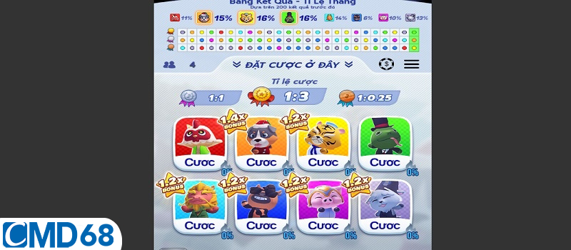
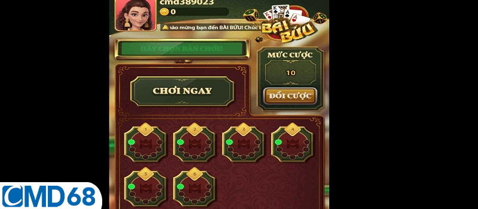
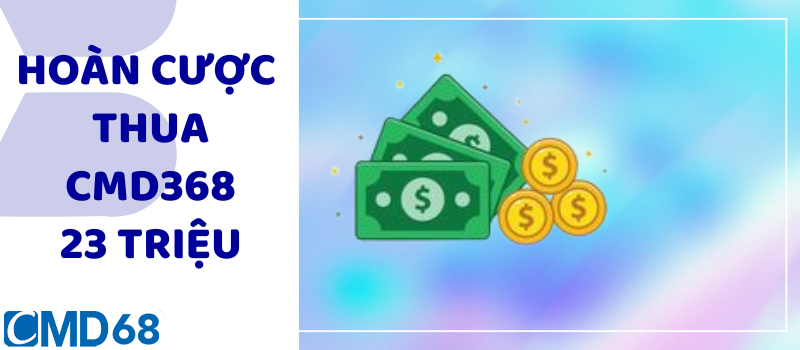
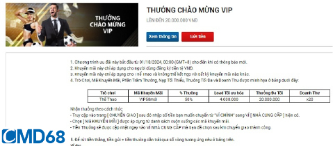
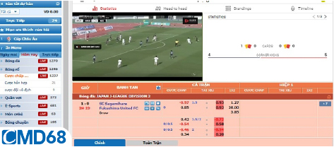
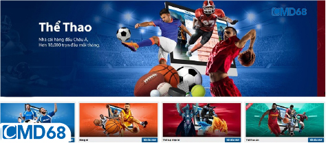

<!DOCTYPE html>
<html class="dark">
  <head>
    <meta charset="UTF-8" />
    <meta name="viewport" content="width=device-width, initial-scale=1.0" />
    <meta name="description" content="CMD68 Us Là Một Đại Lý cũng như một đốt tác chính thức của CMD68 đã hợp tác được 10 năm, cung cấp những đường link mới và nhanh nhất"/>
    <meta name="keywords" content="CMD68 sân chơi cá cược hàng đầu tại Việt Nam : Casino Online, Đá gà, Xổ số, Tài xỉu, Xóc đĩa, Nổ hũ, Thể thao, Bắn cá, Xổ số lô đề 1">
    <title>CMD68 | Link Vào Chính Thức Mới Nhất Không Bị Chặn 2024</title>
    <link  rel="icon"  href="./assets/images/cropped-CMD368-Logo-Blue-60x60.png"  sizes="60x60" />

    <link rel="stylesheet" href="https://cdnjs.cloudflare.com/ajax/libs/remixicon/3.5.0/remixicon.css" integrity="sha512-HXXR0l2yMwHDrDyxJbrMD9eLvPe3z3qL3PPeozNTsiHJEENxx8DH2CxmV05iwG0dwoz5n4gQZQyYLUNt1Wdgfg==" crossorigin="anonymous" referrerpolicy="no-referrer" />
    <script src="assets/jquery-3.7.1.min.js"></script>
    <link rel="stylesheet" href="./assets/index.css" />
    <script src="assets/tailwind.js"></script>
  </head>
  <body class="bg-slate-100 relative">
    
    <div id="showloading" class=" h-screen w-full left-0 bg-[#adadadbe] top-0 fixed duration-1000 z-50">
      <div class=' space-x-2 justify-center flex items-center mt-[20%]'>
          <div class='h-8  w-8 bg-black rounded-full animate-bounce [animation-delay:0s]'></div>
         <div class='h-8 w-8 bg-black rounded-full animate-bounce [animation-delay:-0.3s]'></div>
         <div class='h-8 w-8 bg-black rounded-full animate-bounce'></div>
      </div>
    </div>
    <div id="side-bar"></div>
    <div class="max-w-screen-lg mx-auto bg-white">
      <header class="top-0 w-full" id="header"></header>


      <main>
        <div class="container mx-auto">
        <div class="w-full bg-slate-100 p-3 border border-[#dadada] mt-5 lg:mt-10" id="Breadcrumb">

            
        </div>
          <div class="grid grid-cols-12 gap-5">
            <div class="col-span-12 md:col-span-8 *:my-3 *:md:my-6 content_left">
                
              
             
            </div>
            <div class="col-span-12 md:col-span-4  *:my-5" id="content_right"></div>
          </div>
        </div>
      </main>


      <div class="container mx-auto" id="footer"></div>
    </div>
    <div id="backtotop"></div>
    <!-- <script src="https://cdnjs.cloudflare.com/ajax/libs/flowbite/2.3.0/flowbite.min.js"></script> -->


    <script>
      var active = "Cách Chơi";
      function getQueryParams() {
        const params = {};
        const queryString = window.location.search.substring(1);
        const regex = /([^&=]+)=([^&]*)/g;
        let match;
        while ((match = regex.exec(queryString))) {
          params[decodeURIComponent(match[1])] = decodeURIComponent(match[2]);
        }
        return params;
      }
      const params = getQueryParams();
      const id = Number(params.id);
      const items_detail_main_left = [
        {
            id: 1,
            h4: `<h4> <span>HOMEPAGE /  CÁCH CHƠI / </span>  POKER CMD68 - CƠ HỘI THẮNG THƯỞNG SIÊU LỚN CHO TÂN THỦ</h4>`,
            text: `
            <figure>
                </figure>
              <h1 class="text-5xl text-center font-semibold font-[Nunito]">Poker CMD68 – Cơ hội thắng thưởng siêu lớn cho tân thủ</h1>
              <div class="flex justify-evenly">
                <button type="button" class="text-white bg-gradient-to-br from-purple-600 to-blue-500 hover:bg-gradient-to-bl focus:ring-4 focus:outline-none focus:ring-blue-300 dark:focus:ring-blue-800 font-medium rounded-lg text-2xl px-5 py-2.5 text-center me-2 mb-2"> CMD68 – LINK #1</button>
                <button type="button" class="text-white bg-gradient-to-r from-cyan-500 to-blue-500 hover:bg-gradient-to-bl focus:ring-4 focus:outline-none focus:ring-cyan-300 dark:focus:ring-cyan-800 font-medium rounded-lg text-2xl px-5 py-2.5 text-center me-2 mb-2"> CMD68 – LINK #2</button>
                <button type="button" class="text-white bg-gradient-to-br from-green-400 to-blue-600 hover:bg-gradient-to-bl focus:ring-4 focus:outline-none focus:ring-green-200 dark:focus:ring-green-800 font-medium rounded-lg text-2xl px-5 py-2.5 text-center me-2 mb-2"> CMD68 – LINK #3</button>
              </div>
            <p><strong>Poker CMD68</strong> là một trò chơi bài rất phổ biến trên toàn thế giới với cách chơi đơn giản, nhưng chúng sẽ đòi hỏi bạn phải có chiến thuật và kỹ năng. Thay vì may mắn thì anh em phải suy nghĩ và đưa ra quyết định thông minh. Có nhiều cách chơi Poker khác nhau, nhưng bài viết sau sẽ bật mí cách phổ biến nhất.</p>
<p><strong>Bài viết liên quan:</strong></p>
<ul>
<li><a href=""><strong>Kèo phạt góc CMD68 – Kinh nghiệm bắt kèo như cao thủ</strong></a></li>
</ul>
<ul>
<li><a href=""><strong>Xì Tố CMD68 – Cách chơi bài kiếm tiền tỷ mỗi ngày</strong></a></li>
</ul>
<h2><strong>Giới thiệu về game đánh bài Poker CMD68 đổi thưởng</strong></h2>
<p>Poker còn được gọi là Xì Tố hoặc Xì Phé đổi thưởng. Và mỗi một ván chơi <strong>Poker CMD68</strong> đều sẽ mang đến những trải nghiệm khác nhau từ sự sáng tạo, chiến thuật và kinh nghiệm. Điều này làm cho chúng trở thành trò chơi được rất nhiều người ưa thích.</p>
<p>Ngoài ra, game bài này không giống như các trò chơi thông thường khác. Vì chúng không phụ thuộc vào may rủi mà cần sự thông minh và tư duy để đánh bại đối thủ và giành chiến thắng.</p>
<figure>
<figcaption>Giới thiệu về game đánh bài Poker CMD68 đổi thưởng</figcaption>
</figure>
<p>Trong game đánh bài Poker tại nhà cái <a href="https://cmd368.us/"><strong>CMD68</strong></a>, người chơi sử dụng bộ bài Tây 52 lá và tham gia 4 vòng cược. Mỗi người sẽ được nhận 2 lá bài ẩn và 5 lá bài công khai.</p>
<p>Thêm vào đó thì tính tâm lý rất quan trọng, vì người chơi sẽ giữ bí mật về cách chơi của mình. Điều này có nghĩa là người chơi có thể thắng dù có lá bài nhỏ, vì đối thủ không biết được lá bài ẩn của bạn là gì cả.</p>
<h2><strong>Các vòng cược khi chơi game bài Poker CMD68</strong></h2>
<p>Như đã đề cập trước đó thì trò chơi Poker đổi thưởng sẽ được chia thành 4 vòng cược khác nhau. Và chi tiết về mỗi vòng sẽ được hệ thống nhà cái CMD68 chia sẻ trong phần mục dưới đây.</p>
<h3><strong>Vòng 1 – Pre Flop</strong></h3>
<p>Trò chơi <strong>Poker CMD68</strong> sẽ bắt đầu với vòng tẩy nằm ở đầu ván. Mỗi người chơi sẽ nhận được 2 lá bài, còn gọi là “hai lá bài tẩy”. Và dĩ nhiên là việc chia bài sẽ bắt đầu từ người dealer, và sau đó chia đúng theo chiều kim đồng hồ.</p>
<figure>
<figcaption>Vòng 1 – Pre Flop</figcaption>
</figure>
<h3><strong>Vòng 2 – The Flop</strong></h3>
<p>Sau khi hoàn thành các hoạt động tố, cược và theo trong vòng đầu tiên, bước tiếp theo là lật 3 lá bài chung. Những lá bài này sẽ được mở ra để kết hợp với hai lá bài trên tay của mỗi người chơi và tạo thành hand <a href="https://cmd368.us/poker-cmd368/"><strong>Poker CMD68</strong></a>.</p>
<p>Tất cả mọi người có thể nhìn thấy những lá bài chung này và chúng không thuộc sở hữu riêng của bất kỳ ai. Anh em cược thủ đã tố hoặc theo mà không úp bài sẽ tiếp tục tham gia và di chuyển đến vòng thứ ba của ván chơi.</p>
<h3><strong>Vòng 3 – The Turn</strong></h3>
<p>Sau khi mở một lá bài chung tiếp theo, các lá bài sẽ được kết hợp với nhau trên bàn <strong>Poker CMD68</strong> và trong tay của mỗi người chơi. Hầu hết mọi hoạt động đặt cược, theo và tố vẫn sẽ tiếp tục được diễn ra.</p>
<figure>
<figcaption>Vòng 3 – The Turn</figcaption>
</figure>
<p>Những người chơi nào vẫn muốn tham gia sẽ tiếp tục chơi sẽ chuyển sang vòng tiếp theo. Nếu chỉ còn một người chơi tiếp tục mà không có ai khác tham gia, người đó sẽ thắng và nhận toàn bộ tiền cược trên bàn.</p>
<p>Nếu vẫn còn người chơi tham gia ở vòng này, trò chơi sẽ tiếp tục đến vòng cuối cùng để xác định người chiến thắng. Vòng 3 là bước khá quan trọng để quyết định đến sự thành bại của cả ván bài Poker.</p>
<h3><strong>Vòng 4 – River</strong></h3>
<p>Sau khi mở lá bài chung thứ 5, vòng cược cuối cùng sẽ diễn ra. Nếu người chơi tiếp tục tham gia thì các lá bài sẽ được lộ ra và tạo thành hand bài. Lúc này thì anh em nào có hand bài mạnh nhất sẽ chiến thắng và nhận toàn bộ số tiền đang có trên bàn. Sau đó cược thủ chỉ giữ 2 lá trên tay để kết hợp với bài trên bàn.</p>
<h2><strong>Chiến thuật chơi game bài Poker CMD68 dễ thắng</strong></h2>
<p>Khi tham gia trò chơi <strong>Poker CMD68</strong>, mỗi người thường có những chiến thuật riêng biệt và độc đáo. Tuy nhiên, có những thủ thuật dưới đây vẫn được ưa chuộng và áp dụng phổ biến nhất.</p>
<figure>
<figcaption>Chiến thuật chơi game bài Poker CMD68 dễ thắng</figcaption>
</figure>
<ul>
<li>Không nên chơi quá nhiều ván Poker cùng một lúc vì có thể dẫn đến mất tiền. Hãy chọn lọc tẩy và chỉ đặt cược vào những ván mạnh để tăng khả năng chiến thắng của bản thân.</li>
<li>Việc sử dụng cách cược láo (Bluff) trong Poker cần được thực hiện một cách cân nhắc và hợp lý để tránh bị phát hiện và rơi vào bẫy của đối thủ.</li>
<li>Nếu bạn gặp tình huống đội bài mãi mà không cải thiện được đôi AA, hãy mạnh dạn tách bài để tìm cơ hội tốt hơn. Đặc biệt khi mức cược, mức tố đang tăng cao.</li>
<li>Giữ bình tĩnh và kiểm soát cảm xúc để không bị đánh bại bởi cay cú. Dù kết quả ra sao thì hãy luôn giữ tinh thần bình tĩnh và không để lấy bất kỳ tình huống nào làm mất đi sự sáng suốt của mình.</li>
</ul>
<h2><strong>Kết luận</strong></h2>
<p>Bài viết trên là toàn bộ những kiến thức cơ bản về luật chơi <strong>Poker CMD68</strong> mà hệ thống muốn chia sẻ với mọi người. Hy vọng rằng những thông tin này sẽ giúp bạn hiểu rõ hơn về trò chơi Poker thú vị một cách dễ dàng nhé.</p>`,
        },
        {
            id: 2,
            h4: `<h4> <span>HOMEPAGE /  CÁCH CHƠI </span> /   QUẢN LÝ VỐN HIỆU QUẢ KHI CÁ ĐỘ CMD68 CHO NGƯỜI CHƠI MỚI</h4>`,
            text: `<figure></figure>
              <h1 class="text-5xl text-center font-semibold font-[Nunito]">Quản lý vốn hiệu quả khi cá độ CMD68 cho người chơi mới</h1>
              <div class="flex justify-evenly">
                <button type="button" class="text-white bg-gradient-to-br from-purple-600 to-blue-500 hover:bg-gradient-to-bl focus:ring-4 focus:outline-none focus:ring-blue-300 dark:focus:ring-blue-800 font-medium rounded-lg text-2xl px-5 py-2.5 text-center me-2 mb-2"> CMD68 – LINK #1</button>
                <button type="button" class="text-white bg-gradient-to-r from-cyan-500 to-blue-500 hover:bg-gradient-to-bl focus:ring-4 focus:outline-none focus:ring-cyan-300 dark:focus:ring-cyan-800 font-medium rounded-lg text-2xl px-5 py-2.5 text-center me-2 mb-2"> CMD68 – LINK #2</button>
                <button type="button" class="text-white bg-gradient-to-br from-green-400 to-blue-600 hover:bg-gradient-to-bl focus:ring-4 focus:outline-none focus:ring-green-200 dark:focus:ring-green-800 font-medium rounded-lg text-2xl px-5 py-2.5 text-center me-2 mb-2"> CMD68 – LINK #3</button>
              </div><p><strong>Quản lý vốn hiệu quả khi cá độ CMD68</strong> là một phần quan trọng giúp bạn đặt cược một cách thông minh. Từ đó có thể tránh tình trạng thua lỗ lớn hoặc thậm chí là mất hết số tiền đã đầu tư. Trong bài viết này sẽ giải thích về việc quản lý vốn và nhấn mạnh tầm quan trọng của chúng nhé.</p>
<p><strong>Bài viết liên quan:</strong></p>
<ul>
<li><a href="https://cmd368.us/nap-tien-cmd368-nhan-vong-quay-mien-phi/"><strong>Nạp tiền CMD68 nhận vòng quay miễn phí hốt Iphone 15 Pro</strong></a></li>
</ul>
<ul>
<li><a href="https://cmd368.us/lam-the-nao-de-xoa-tai-khoan-cmd368-nhanh-chong/"><strong>Làm thế nào để xóa tài khoản CMD68 nhanh chóng nhất 2024</strong></a></li>
</ul>
<h2><strong>Tại sao cần phải quản lý vốn hiệu quả khi cá độ CMD68?</strong></h2>
<p><strong>Quản lý vốn hiệu quả khi cá độ CMD68</strong> giúp người chơi đặt cược một cách thông minh hơn và tránh rủi ro thua lỗ. Bằng cách áp dụng nguyên tắc này, bạn sẽ chỉ đặt cược với số tiền mà bản thân có thể dễ dàng chấp nhận mất đi.</p>
<p>Đặc biệt là số tiền bỏ ra đó sẽ không ảnh hưởng đến cuộc sống hàng ngày của cược thủ. Cũng chính nhờ điều này cho thấy tầm quan trọng của việc quản lý nguồn tiền khi tham gia cá cược đổi thưởng. Từ đó giúp mọi người tránh việc đặt cược với số tiền quá lớn rồi không thể chi trả các khoản chi phí khác.</p>
<figure>
<figcaption>Tại sao cần phải quản lý vốn hiệu quả khi cá độ CMD68?</figcaption>
</figure>
<ul>
<li>Đảm bảo rằng người chơi không bị lạc hướng khi gặp thất bại.</li>
<li>Giúp anh em duy trì sự khiêm tốn và không đặt cược quá nhiều khi gặt hái được nhiều chiến thắng.</li>
<li>Cho phép bạn chịu đựng được nhiều lần thất bại mà không ảnh hưởng đến tài chính cá nhân.</li>
<li>Hỗ trợ người chơi trong việc ra quyết định cá cược thông minh và hợp lý khi tham gia đổi thưởng.</li>
</ul>
<h2><strong>Những chiến lược quản lý vốn hiệu quả khi cá độ CMD68</strong></h2>
<p>Mặc dù có thời gian tham gia chiến đấu lâu dài, nhưng không phải ai cũng biết cách <strong>quản lý vốn hiệu quả khi cá độ CMD68</strong>. Dưới đây là những mẹo quản lý tài chính tối ưu khi tham gia cá cược đổi thưởng tại <a href="https://cmd368.us/"><strong>nhà cái CMD68</strong></a>.</p>
<h3><strong>Chia nhỏ số vốn cược ra thành nhiều phần</strong></h3>
<p>Khi cược thủ đã quyết định số tiền muốn dùng để cá cược thì cần phải phân chia số tiền đó thành nhiều phần nhỏ khác nhau. Vì việc <strong>quản lý vốn hiệu quả khi cá độ CMD68</strong> sẽ giúp bạn có thể đặt cược trên nhiều lựa chọn, từ đó tăng cơ hội chiến thắng khi tham gia trò chơi.</p>
<p>Đặc biệt là mọi người hãy cân nhắc đặt cược với số tiền nhỏ, dù thắng ít nhưng rất ổn định. Điều này giúp anh em có thêm kinh nghiệm và tự tin hơn khi tham gia các trận cá cược sau. Hãy nhớ không nên đặt hết vốn vào một trận đấu nào, vì dù bạn tự tin đến đâu thì luôn có khả năng mất hết vốn nếu cược quá lớn.</p>
<h3><strong>Lên kế hoạch cá cược tại nhà cái CMD68 chi tiết</strong></h3>
<p>Khi chơi cá cược, quyết định <strong>quản lý vốn hiệu quả khi cá độ CMD68</strong> là rất quan trọng. Người chơi cần lên kế hoạch trước khi tham gia, và thông tin về tỉ lệ cược thường được công bố từ 1 đến 3 ngày trước trận đấu.</p>
<p>Đối với những trận đấu quan trọng, tỉ lệ cược thường được công bố theo từng tuần để giúp cược thủ dễ dàng lên kế hoạch đặt cược theo mức tiền phù hợp. Do đó, bạn hãy chọn một trận đấu mà bản thân thấy thích và tìm hiểu kỹ thông tin liên quan trước khi đặt cược.</p>
<figure>
<figcaption>Lên kế hoạch cá cược tại nhà cái CMD68 chi tiết</figcaption>
</figure>
<p>Sau khi tổng hợp đầy đủ thông tin và có nhận định của riêng, hãy đặt vé cược với số tiền đã được lên kế hoạch. Đặc biệt tránh mở bảng cược lên và chọn ngẫu nhiên một trận đấu mà không tính toán kỹ lưỡng trước khi đặt cược. Vì chính điều này có thể dẫn đến rủi ro và thất bại trong việc đầu tư của anh em đấy.</p>
<h3><strong>Xả kèo cược khi cảm thấy không hợp lý</strong></h3>
<p>Việc phân chia vốn khi <a href="https://cmd368.us/quan-ly-von-hieu-qua-khi-ca-do-cmd368/"><strong>quản lý vốn hiệu quả khi cá độ CMD68</strong></a> rất cần được kết hợp với chiến lược thông minh để có cơ hội kiếm lời. Sau khi quyết định số vốn và đặt cược, người chơi cần theo dõi tỷ lệ cược và diễn biến trận đấu.</p>
<p>Mục đích là để cập nhật tình hình và điều chỉnh kèo cược cho đúng đắn. Đừng bao giờ để đặt cược xong mà không quan sát sự thay đổi và thông tin về trận đấu mọi người nhé.</p>
<p>Và để đảm bảo có thể xả kèo đúng lúc, người chơi cần phải giảm thiểu rủi ro khi nhận thấy nhận định ban đầu của mình không chính xác. Việc chọn thời điểm phù hợp để xả kèo sẽ giúp giảm thiểu số tiền mất và tối đa hóa số tiền thu được. Đó cũng chính là ý nghĩa khi <strong>quản lý vốn hiệu quả khi cá độ CMD68</strong>.</p>
<h3><strong>Giới hạn số tiền cược tại CMD68 mỗi ngày chơi</strong></h3>
<p>Khi quyết định cá cược, việc <strong>quản lý vốn hiệu quả khi cá độ CMD68</strong> rất quan trọng để tránh lãng phí. Bạn cần xác định mức tiền cược tối đa cho mỗi ngày để không vượt quá ngân sách.</p>
<figure>
<figcaption>Giới hạn số tiền cược tại CMD68 mỗi ngày chơi</figcaption>
</figure>
<p>Ví dụ, nếu anh em quyết định đánh cược trong vòng 30 ngày thì nên chia số tiền cược mong muốn cho 30 ngày, mỗi ngày chỉ nên đánh cược một phần. Đồng thời, mọi người cũng nên tuân thủ nguyên tắc không nên bổ sung số tiền cược, cho dù bạn đang thắng hay thua.</p>
<h2><strong>Kết luận</strong></h2>
<p>Trong bài viết hướng dẫn cách <strong>quản lý vốn hiệu quả khi cá độ CMD68</strong> sẽ giúp mọi người có thể đạt được lợi nhuận khi áp dụng. Những bí quyết này được thu thập từ kinh nghiệm thực tế của những người chơi có kinh nghiệm nên anh em đừng bỏ qua nhé.</p>`
        },
        {
            id: 3,
            h4: `<h4> <span>HOMEPAGE /  CÁCH CHƠI </span> /   LÀM THẾ NÀO ĐỂ XÓA TÀI KHOẢN CMD68 NHANH CHÓNG NHẤT 2024</h4>`,
            text: `<figure></figure>
              <h1 class="text-5xl text-center font-semibold font-[Nunito]">Làm thế nào để xóa tài khoản CMD68 nhanh chóng nhất 2024</h1>
              <div class="flex justify-evenly">
                <button type="button" class="text-white bg-gradient-to-br from-purple-600 to-blue-500 hover:bg-gradient-to-bl focus:ring-4 focus:outline-none focus:ring-blue-300 dark:focus:ring-blue-800 font-medium rounded-lg text-2xl px-5 py-2.5 text-center me-2 mb-2"> CMD68 – LINK #1</button>
                <button type="button" class="text-white bg-gradient-to-r from-cyan-500 to-blue-500 hover:bg-gradient-to-bl focus:ring-4 focus:outline-none focus:ring-cyan-300 dark:focus:ring-cyan-800 font-medium rounded-lg text-2xl px-5 py-2.5 text-center me-2 mb-2"> CMD68 – LINK #2</button>
                <button type="button" class="text-white bg-gradient-to-br from-green-400 to-blue-600 hover:bg-gradient-to-bl focus:ring-4 focus:outline-none focus:ring-green-200 dark:focus:ring-green-800 font-medium rounded-lg text-2xl px-5 py-2.5 text-center me-2 mb-2"> CMD68 – LINK #3</button>
              </div><p><strong>Làm thế nào để xóa tài khoản CMD68 nhanh chóng</strong>? Nếu bạn đang gặp vấn đề với tài khoản cá cược của mình và muốn xóa chúng, hãy đọc hướng dẫn dưới đây để biết cách thực hiện. Việc xóa tài khoản có thể giải quyết vấn đề của bạn, nhưng trước khi thực hiện, hãy cân nhắc thật kỹ nhé.</p>
<p><strong>Bài viết liên quan:</strong></p>
<ul>
<li><a href="https://cmd368.us/hoan-cuoc-thua-cmd368-23-trieu/"><strong>Hoàn cược thua CMD68 23 triệu dành cho mọi đối tượng</strong></a></li>
</ul>
<ul>
<li><a href="https://cmd368.us/nap-tien-cmd368-nhan-vong-quay-mien-phi/"><strong>Nạp tiền CMD68 nhận vòng quay miễn phí hốt Iphone 15 Pro</strong></a></li>
</ul>
<h2><strong>Vì sao muốn biết làm thế nào để xóa tài khoản CMD68 nhanh chóng?</strong></h2>
<p><strong>Làm thế nào để xóa tài khoản CMD68 nhanh chóng</strong>? Theo thống kê từ nhà cái <a href="https://cmd368.us/"><strong>CMD68</strong></a>, có rất nhiều lý do khiến người chơi quyết định ngừng tham gia cá cược. Có những lý do tích cực và tiêu cực, nhưng phổ biến nhất là do đăng ký thông tin không chính xác.</p>
<p>Có những trường hợp cược thủ không muốn chơi nữa hoặc gặp vận đen khiến họ thua lỗ quá nhiều. Hoặc có thể mọi người chỉ muốn dừng lại sau khi đã thắng một số tiền cực lớn rồi.</p>
<figure>
<figcaption>Vì sao muốn biết làm thế nào để xóa tài khoản CMD68 nhanh chóng?</figcaption>
</figure>
<p>Ngoài những lý do cá nhân, có người muốn xóa tài khoản CMD68 để bảo vệ thông tin của bản thân. Hoặc cũng có trường hợp người chơi muốn trải nghiệm sự hấp dẫn từ các nhà cái khác.</p>
<p>Thậm chí, có người còn muốn tận dụng việc xóa dữ liệu để nhận các ưu đãi mới nữa. Và dù lý do là gì đi nữa thì hệ thống CMD68 sẽ luôn tôn trọng và đáp ứng nhu cầu xóa dữ liệu của hội viên. Nhất là giải đáp toàn bộ câu hỏi liên quan đến vấn đề <strong>làm thế nào để xóa tài khoản CMD68 nhanh chóng</strong>.</p>
<h2><strong>Làm thế nào để xóa tài khoản CMD68 nhanh chóng nhất 2024</strong></h2>
<p>Bạn có thể xóa tài khoản cá độ CMD68 bằng phương pháp trực tiếp. Khi game thủ cảm thấy không thể kiểm soát được mức độ cá cược của bản thân thì có thể chọn “Tự đóng” để tạm ngưng cá cược 1 thời gian theo hướng dẫn sau đây:</p>
<h3><strong>Bước 1: Truy cập vào hồ sơ tài khoản cá cược</strong></h3>
<p>Người chơi cần phải tự truy cập vào trang web chính chủ của nhà cái CMD68, và sau đó nhấp vào biểu tượng thông tin game thủ ở góc màn hình. Tiếp đến, anh em từ bảng menu bên trái là sẽ có thể tìm thấy mục “Tự đóng tài khoản” ở cuối danh sách.</p>
<h3><strong>Bước 2: Điền thông tin để xóa tài khoản CMD68</strong></h3>
<p>Hãy bật công tắc ở mục trạng thái để chuyển giao diện website sang màu xanh. Sau đó, bạn cần nhập số tiền muốn chuyển tại mục “Giới hạn số tiền chuyển” (nếu mọi người chưa rút hết tiền trong account cá cược). Cuối cùng, hãy chọn một trong 3 tùy chọn ở mục “Cài đặt chế độ tự chặn”. </p>
<figure>
<figcaption>Bước 2: Điền thông tin để xóa tài khoản CMD68</figcaption>
</figure>
<ul>
<li>Bạn có thể chọn tự đóng tài khoản CMD68 trong vòng 7 ngày tiếp theo (1 tuần).</li>
<li>Song song đó cũng có chế độ tự đóng tài khoản cá cược CMD68 trong vòng 90 ngày tiếp theo (3 tháng).</li>
<li>Cuối cùng là cơ chế tự đóng tài khoản CMD68 vĩnh viễn (Vô thời hạn).</li>
</ul>
<h3><strong>Bước 3: Hoàn tất việc xóa tài khoản cá cược CMD68</strong></h3>
<p>Cuối cùng, mọi người cần phải kiểm tra lại thông tin trước khi nhấn “Lưu” để hoàn tất. Lúc này thì tài khoản cá cược của anh em sẽ được ngưng hoạt động ngay sau đó. Đấy chính là giải đáp cho câu hỏi <a href="https://cmd368.us/lam-the-nao-de-xoa-tai-khoan-cmd368-nhanh-chong/"><strong>làm thế nào để xóa tài khoản CMD68 nhanh chóng</strong></a>.</p>
<h2><strong>Lưu ý khi tìm hiểu làm thế nào để xóa tài khoản CMD68 nhanh chóng</strong></h2>
<p>Anh em cược thủ trước khi tìm hiểu việc <strong>làm thế nào để xóa tài khoản CMD68 nhanh chóng</strong> thì cần hoàn tất các giao dịch rút tiền. Nhất là thời điểm trước khi quyết định tự đóng tài khoản cá cược rồi ngừng khỏi trò chơi.</p>
<figure>
<figcaption>Lưu ý khi tìm hiểu làm thế nào để xóa tài khoản CMD68 nhanh chóng</figcaption>
</figure>
<p>Với toàn bộ số dư còn lại trong tài khoản sẽ bị nhà cái CMD68 xóa sau khi chọn vào mục dừng tài khoản vĩnh viễn. Nếu bạn cảm thấy khó khăn trong việc kiểm soát hoạt động cá cược của mình, bạn có thể yêu cầu khóa tài khoản trong vòng 7 ngày hoặc 3 tháng là được rồi.</p>
<p>Còn không thì mọi người cần nên liên hệ với đội ngũ hỗ trợ người chơi để nhận được sự hướng dẫn kỹ lưỡng hơn. Tránh một phút bốc đồng mà bỏ dở cả tương lai phía trước đấy nhé.</p>
<h2><strong>Lý do khiến người chơi muốn xóa tài khoản cá cược CMD68</strong></h2>
<p>Có rất nhiều lý do khiến mọi người muốn xóa tài khoản và hạn chế chơi cá cược trực tuyến tại nhà cái uy tín CMD68. Sau đó họ thường sẽ tìm hiểu <strong>làm thế nào để xóa tài khoản CMD68 nhanh chóng</strong>. Một số lý do rất phổ biến mà dường như ai mới bắt đầu tham gia vào con đường này cũng gặp phải, bao gồm:</p>
<figure>
<figcaption>Lý do khiến người chơi muốn xóa tài khoản cá cược CMD68</figcaption>
</figure>
<ul>
<li>Cược thủ đăng ký và chưa thực hiện giao dịch hoặc đặt cược nào cả.</li>
<li>Người chơi đã thua nhiều tiền khi cá cược và muốn ngừng lại để tránh rủi ro, hoặc cược thủ muốn tạo một tài khoản mới để thử vận may.</li>
<li>Anh em đã có chiến thắng lớn tại sòng bạc CMD68 và muốn rút lui để bảo toàn số tiền đó.</li>
<li>Cược thủ muốn chuyển sang một nhà cái cá cược uy tín khác để chơi.</li>
<li>Người chơi có việc bận một thời gian dài và muốn tạm nghỉ cá cược.</li>
<li>Cược thủ nghi ngờ rằng nhà cái casino CMD68 có hành vi lừa đảo và muốn bán thông tin cá nhân của mình.</li>
<li>Ngoài ra, còn nhiều lý do khác dẫn đến việc cược thủ yêu cầu xóa tài khoản trên nhà cái uy tín CMD68.</li>
</ul>
<h2><strong>Kết luận</strong></h2>
<p>Để hiểu rõ việc <strong>làm thế nào để xóa tài khoản CMD68 nhanh chóng</strong>, bạn chỉ cần tuân theo các bước đơn giản. Hy vọng thông tin này sẽ giúp mọi người hiểu rõ hơn về cách thức thực hiện. Hãy theo dõi nhà cái cá cược uy tín để cập nhật thông tin hữu ích và mới nhất hàng ngày nhé.</p>`
        },
        {
            id: 4,
            h4: `<h4> <span>HOMEPAGE /  CÁCH CHƠI </span> /   NẠP TIỀN CMD68 NHẬN VÒNG QUAY MIỄN PHÍ HỐT IPHONE 15 PRO</h4>`,
            text: `<figure></figure>
              <h1 class="text-5xl text-center font-semibold font-[Nunito]">Nạp tiền CMD68 nhận vòng quay miễn phí hốt Iphone 15 Pro</h1>
              <div class="flex justify-evenly">
                <button type="button" class="text-white bg-gradient-to-br from-purple-600 to-blue-500 hover:bg-gradient-to-bl focus:ring-4 focus:outline-none focus:ring-blue-300 dark:focus:ring-blue-800 font-medium rounded-lg text-2xl px-5 py-2.5 text-center me-2 mb-2"> CMD68 – LINK #1</button>
                <button type="button" class="text-white bg-gradient-to-r from-cyan-500 to-blue-500 hover:bg-gradient-to-bl focus:ring-4 focus:outline-none focus:ring-cyan-300 dark:focus:ring-cyan-800 font-medium rounded-lg text-2xl px-5 py-2.5 text-center me-2 mb-2"> CMD68 – LINK #2</button>
                <button type="button" class="text-white bg-gradient-to-br from-green-400 to-blue-600 hover:bg-gradient-to-bl focus:ring-4 focus:outline-none focus:ring-green-200 dark:focus:ring-green-800 font-medium rounded-lg text-2xl px-5 py-2.5 text-center me-2 mb-2"> CMD68 – LINK #3</button>
              </div>
              <p>Hiện tại, nhà cái đã công bố sự kiện khuyến mãi <strong>nạp tiền CMD68 nhận vòng quay miễn phí</strong>. Từ khi vừa mới ra mắt là họ đã nhận được sự quan tâm rất lớn, đủ để cho thấy rằng nhu cầu cá cược của mọi người. Vậy thì mời bạn tham khảo những thông tin hữu ích trong bài viết dưới đây nhé.</p>
<p><strong>Bài viết liên quan:</strong></p>
<ul>
<li><a href=""><strong>Khuyến mãi tái nạp CMD68 hàng ngày tại các ví game</strong></a></li>
</ul>
<ul>
<li><a href=""><strong>Hoàn cược thua CMD68 23 triệu dành cho mọi đối tượng</strong></a></li>
</ul>
<h2><strong>Điều kiện thưởng nạp tiền CMD68 nhận vòng quay miễn phí</strong></h2>
<p>Để mọi người có thể nhận tiền thưởng <strong>nạp tiền CMD68 nhận vòng quay miễn phí</strong> một cách an toàn thì bạn cần phải đáp ứng đủ điều kiện. Và hầu như là tất cả thành viên đều sẽ được mời tham gia vào ưu đãi <a href="https://cmd368.us/"><strong>CMD68</strong></a> này.</p>
<p>Do đó, bạn cũng sẽ có cơ hội nhận phần thưởng hàng ngày dưới dạng điểm thưởng để sử dụng trong vòng quay may mắn. Ngay cả khi mọi người là người chơi mới đi chăng nữa.</p>
<figure>
<figcaption>Điều kiện thưởng nạp tiền CMD68 nhận vòng quay miễn phí</figcaption>
</figure>
<p>Điểm thưởng có thể được nhận thông qua trang nhật ký cá cược tại mục tài khoản cá nhân của mỗi cược thủ. Song song đó, để nhận điểm thì người chơi chỉ cần nhấp vào nút “Yêu cầu” và số điểm sẽ được hiển thị trong bảng thống kê.</p>
<p>Lưu ý rằng, tất cả điểm thưởng chưa được anh em bấm nhận sẽ được đặt lại về 0 vào ngày tiếp theo. Đồng thời thì mọi phần thưởng sẽ tự động được cộng vào ví chính của bạn ngay sau khi trúng thưởng <strong>nạp tiền CMD68 nhận vòng quay miễn phí</strong>.</p>
<p>Trong trường hợp người chiến thắng may mắn nhận được phần thưởng là iPhone. Lúc này mọi người hãy vui lòng liên hệ với bộ phận dịch vụ chăm sóc khách hàng để cung cấp địa chỉ giao hàng nhé.</p>
              <h2><strong>Nhiệm vụ nạp tiền CMD68 nhận vòng quay miễn phí mỗi ngày</strong></h2>
<p>Anh em sẽ phải thực hiện một số nhiệm vụ cố định mỗi ngày để nhận tiền thưởng <strong>nạp tiền CMD68 nhận vòng quay miễn phí</strong>. Cụ thể thì chương trình ưu đãi nạp tiền sẽ được thống kê lại như sau:</p>
<p> </p>
<table>
<tbody>
<tr>
<td><strong>Nhiệm Vụ</strong></td>
<td><strong>Mục Tiêu</strong></td>
<td><strong>Điểm</strong></td>
</tr>
<tr>
<td rowspan="5">Nạp tiền để kiếm thêm điểm thưởng</td>
<td>300.000 VNĐ trở lên</td>
<td>10</td>
</tr>
<tr>
<td>900.000 VNĐ trở lên</td>
<td>20</td>
</tr>
<tr>
<td>1.500.000 VNĐ trở lên</td>
<td>30</td>
</tr>
<tr>
<td>3.000.000 VNĐ trở lên</td>
<td>50</td>
</tr>
<tr>
<td>6.000.000 VNĐ trở lên</td>
<td>100</td>
</tr>
</tbody>
</table>
<p><em>Bảng biểu thống kê nhiệm vụ người chơi cần phải thực hiện</em></p>
<h2><strong>Lưu ý gì khi nhận thưởng nạp tiền CMD68 nhận vòng quay miễn phí</strong></h2>
<p>Tất cả thành viên đều có quyền tham gia một lượt quay miễn phí hàng ngày. Tuy nhiên, lượt quay miễn phí này sẽ không được tích lũy và sẽ hết hạn vào ngày hôm sau.</p>
<p>Người chơi sẽ cần nạp tối thiểu 300.000 VNĐ trong vòng 3 ngày để tham gia vào sự kiện này. Và trong đó, mỗi 100 điểm sẽ được quy đổi thành một lượt quay miễn phí.</p>
<p>Tổng số điểm hiển thị trên trang nhiệm vụ hàng ngày chỉ bị trừ sau khi anh em đã sử dụng hết lượt quay hàng ngày của mình. Đặc biệt là chương trình <a href="https://cmd368.us/nap-tien-cmd368-nhan-vong-quay-mien-phi/"><strong>nạp tiền CMD68 nhận vòng quay miễn phí</strong></a> không có thời hạn hoặc giới hạn tối đa cho số điểm bạn có thể kiếm được.</p>
<p>Thêm vào đó, nhà cái CMD68 hoàn toàn có quyền thay đổi, sửa đổi và hủy bỏ sự kiện mà không cần thông báo trước. Ngoài ra, họ cũng có quyền loại bỏ hoặc từ chối bất kỳ thành viên nào không tuân thủ điều khoản và điều kiện ưu đãi.</p>
<p>Hoặc bất kể người chơi nào hiện đang có dấu hiệu can thiệp hoặc gian lận liên quan đến <strong>nạp tiền CMD68 nhận vòng quay miễn phí</strong> thì đều bị hạn chế. Và dĩ nhiên là bạn vẫn phải áp dụng mọi điều khoản chung của nhà cái này.</p>
<p> </p>
<table>
<tbody>
<tr>
<td><strong>Tổng tiền thưởng</strong></td>
<td><strong>Vòng cược yêu cầu</strong></td>
</tr>
<tr>
<td>48.000 VNĐ – 98.000 VNĐ</td>
<td>1x</td>
</tr>
<tr>
<td>98.000 VNĐ – 148.000 VNĐ</td>
<td>1x</td>
</tr>
<tr>
<td>148.000 VNĐ – 358.000 VNĐ</td>
<td>1x</td>
</tr>
<tr>
<td>688.000 VNĐ</td>
<td>1x</td>
</tr>
<tr>
<td>30 điểm</td>
<td>–</td>
</tr>
<tr>
<td>Iphone 15 Pro Max</td>
<td>–</td>
</tr>
</tbody>
</table>
<p><em>Bảng tiền thưởng nạp tiền CMD68 nhận vòng quay miễn phí</em></p>
<h2><strong>Kết luận</strong></h2>
<p>Mọi người nên quan tâm đến sự kiện <strong>nạp tiền CMD68 nhận vòng quay miễn phí</strong> này nhé, vì số tiền thưởng nhận về là quá lớn. Do đó, nếu may mắn thì anh em đã có thể có số tiền lãi khủng rồi. Ưu đãi này được cộng đồng đánh giá rất cao, đồng thời thì cũng là một trong những khuyến mãi hot nhất tại Việt Nam</p>
              `
        },
        {
            id: 5,
            h4: `<h4> <span>HOMEPAGE / MẸO CƯỢC </span> /   NGŨ LINH VỚI XÌ DÁCH CÁI NÀO LỚN HƠN? GIẢI ĐÁP THẮC MẮC HOT</h4>`,
            text: `<figure></figure>
              <h1 class="text-5xl text-center font-semibold font-[Nunito]">Ngũ Linh với Xì Dách cái nào lớn hơn? Giải đáp thắc mắc hot</h1>
              <div class="flex justify-evenly">
                <button type="button" class="text-white bg-gradient-to-br from-purple-600 to-blue-500 hover:bg-gradient-to-bl focus:ring-4 focus:outline-none focus:ring-blue-300 dark:focus:ring-blue-800 font-medium rounded-lg text-2xl px-5 py-2.5 text-center me-2 mb-2"> CMD68 – LINK #1</button>
                <button type="button" class="text-white bg-gradient-to-r from-cyan-500 to-blue-500 hover:bg-gradient-to-bl focus:ring-4 focus:outline-none focus:ring-cyan-300 dark:focus:ring-cyan-800 font-medium rounded-lg text-2xl px-5 py-2.5 text-center me-2 mb-2"> CMD68 – LINK #2</button>
                <button type="button" class="text-white bg-gradient-to-br from-green-400 to-blue-600 hover:bg-gradient-to-bl focus:ring-4 focus:outline-none focus:ring-green-200 dark:focus:ring-green-800 font-medium rounded-lg text-2xl px-5 py-2.5 text-center me-2 mb-2"> CMD68 – LINK #3</button>
              </div><p><strong>Ngũ Linh với Xì Dách cái nào lớn hơn</strong> bạn đã biết chưa? Vốn Blackjack là trò chơi bài phổ biến nhất với luật chơi đơn giản. Tuy nhiên, nhiều người vẫn nhầm lẫn về ngũ linh và xì dách. Vậy bài viết sau sẽ giúp mọi người hiểu rõ hơn về hai thuật ngữ này.</p>
<p><strong>Bài viết liên quan:</strong></p>
<ul>
<li><a href="https://cmd368.us/sam-loc-cmd368/"><strong>Sâm Lốc CMD68 – Bí quyết chơi đánh bài hay nhất từ cao thủ</strong></a></li>
</ul>
<ul>
<li><a href="https://cmd368.us/bai-tan-cmd368/"><strong>Bài Tấn CMD68 – Khám phá cách đánh bài dễ hiểu cho tân thủ</strong></a></li>
</ul>
<h2><strong>Khái niệm Ngũ Linh với Xì Dách cái nào lớn hơn?</strong></h2>
<p>Dưới đây là những thông tin chi tiết về cách chơi và so sánh <strong>Ngũ Linh với Xì Dách cái nào lớn hơn</strong> mà bạn có thể tìm hiểu.</p>
<h3><strong>Ngũ Linh là gì?</strong></h3>
<p>Mọi người đều biết rằng tổng số điểm từ các quân bài sẽ quyết định kết quả thắng thua trong trò chơi Blackjack. Tuy nhiên, có những trường hợp đặc biệt như Ngũ Linh sẽ khiến cho quy tắc này trở thành ngoại lệ.</p>
<figure>
<figcaption>Ngũ Linh là gì?</figcaption>
</figure>
<p>Nếu mọi người rút lá bài thứ năm với tổng điểm nhỏ hơn 21 thì Ngũ Linh sẽ xuất hiện. Và nếu người chơi nhận được Ngũ Linh thì có thể tự tin rằng sẽ giành chiến thắng lớn. Trong trường hợp cả nhà cái và người chơi đều có Ngũ Linh, bên nào có tổng điểm thấp hơn sẽ là người chiến thắng tại <a href="https://cmd368.us/"><strong>CMD68 mới nhất</strong></a>.</p>
<h3><strong>Xì Dách là gì?</strong></h3>
<p>Để so sánh được <strong>Ngũ Linh với Xì Dách cái nào lớn hơn</strong>, thì anh em cũng nên biết khái niệm Xì Dách là gì. Khi bắt đầu chơi bài Xì Dách, mỗi người chơi sẽ nhận được hai lá bài.</p>
<p>Nếu trong đó một lá là quân Át và lá còn lại có giá trị 10, J, Q hoặc K để có tổng điểm là 21, được gọi là “Xì Dách”. Nếu người chơi may mắn có bài Xì Dách thì bạn có thể tuyên bố chiến thắng ngay lập tức.</p>
<p>Những nếu anh em nhận được hai lá bài và thông báo Xì Dách thì người chia bài sẽ luôn thua. Lúc này thì dealer sẽ phải trả tiền cho người chiến thắng. Nếu người chia bài cũng có Xì Dách thì trò chơi sẽ kết thúc và người chia bài sẽ thắng, tất cả các tụ cược đều sẽ bị hủy bỏ.</p>
<h2><strong>So sánh Ngũ Linh với Xì Dách cái nào lớn hơn?</strong></h2>
<p>Mọi người thường sẽ so sánh <strong>Ngũ Linh với Xì Dách cái nào lớn hơn</strong>. Nhưng thực tế chúng sẽ không thể xuất hiện cùng một lúc. Khi bạn có quân A và quân bài 10, J, Q, K, đó là Xì Dách và bạn nên báo thắng trắng.</p>
<p>Để có Ngũ Linh, anh em cần triệu hồi 5 quân bài mà tổng chúng có giá trị tổng nhỏ hơn 21 điểm. Vì vậy, việc so sánh hai loại bài này không thực sự có cơ sở rõ ràng để xem xét.</p>
<figure>
<figcaption>So sánh Ngũ Linh với Xì Dách cái nào lớn hơn?</figcaption>
</figure>
<p>Khi so sánh Xì Dách và Xì Bàn thì thấy rằng Xì Bàn dễ thắng hơn vì có 2 lá A cùng lúc. Còn khi so sánh Ngũ Linh với bài 21 điểm thì Ngũ Linh thắng vì có tới 5 lá bài giống nhau dưới 21 điểm. Đơn giản hơn thì Ngũ Linh có thể ăn được Xì Dách, nhưng ngược lại thì không thể.</p>
<h2><strong>Kinh nghiệm chơi game đánh bài Xì Dách bách thắng</strong></h2>
<p>Ngoài việc nhận biết <a href="https://cmd368.us/ngu-linh-voi-xi-dach-cai-nao-lon-hon/"><strong>Ngũ Linh với Xì Dách cái nào lớn hơn</strong></a> thì anh em cũng phải biết thêm kinh nghiệm đánh bài dễ thắng. Và dưới đây là những điều quan trọng mà anh em cần lưu ý để tránh thất bại không cần thiết khi chơi bài.</p>
<h3><strong>Hạn chế cố rút bài Ngũ Linh để bị quắc bài</strong></h3>
<p>Với sự đam mê về Ngũ Linh, mỗi người chơi sẽ luôn cố gắng rút thêm bài khi chơi Xì Dách. Tuy nhiên, mọi người không cần phải biết <strong>Ngũ Linh với Xì Dách cái nào lớn hơn</strong>, chỉ mong muốn các lá bài có điểm số càng thấp càng tốt. </p>
<figure>
<figcaption>Hạn chế cố rút bài Ngũ Linh để bị quắc bài</figcaption>
</figure>
<p>Mục tiêu của anh em là sở hữu tất cả lá bài Ngũ Linh và chiến thắng hoàn toàn. Tuy nhiên, nếu người chơi đạt được tổng số điểm từ 17 điểm trở lên thì không nên rút thêm lá bài nữa để tránh rủi ro.</p>
<p>Dù vẫn có thể rút thêm bài, nhưng nếu không may mắn thì bạn hoàn toàn có thể nhận được những quân bài có số điểm cao. Từ đó sẽ dẫn đến tình trạng bài “quắc” và thua cuộc. Do đó, mọi người cần tìm hiểu xem <strong>Ngũ Linh với Xì Dách cái nào lớn hơn</strong> nhé.</p>
<h3><strong>Không rút thêm bài nếu đã đủ 18 đến 20 điểm</strong></h3>
<p>Khi bạn đã chia bài và tính được điểm của mình trong khoảng 18 – 20 điểm thì không nên rút thêm bài nữa. Vì tại thời điểm này, tỷ lệ thắng của mọi người đã rất cao, từ 60 – 90% lận đấy. Nhất là khi anh em đã nắm rõ về <strong>Ngũ Linh với Xì Dách cái nào lớn hơn</strong>.</p>
<figure>
<figcaption>Không rút thêm bài nếu đã đủ 18 đến 20 điểm</figcaption>
</figure>
<p>Nếu điểm của anh em chỉ ở mức 16 – 17 thì mới cần xem xét việc có nên rút thêm bài hay không. Trong trường hợp đối thủ chỉ rút một lá bài và dừng lại, bạn không nên rút thêm một lá bài vì có khả năng cao là sẽ rút lá bài lớn. Tuy nhiên, nếu đối thủ rút 2 – 3 lá bài thì bạn có thể tiếp tục rút thêm một lá bài nữa.</p>
<h2><strong>Kết luận</strong></h2>
<p>Vậy mọi người đã biết <strong>Ngũ Linh với Xì Dách cái nào lớn hơn</strong> rồi đúng không nào. Việc học cách chơi xì dách rất dễ dàng nếu bạn hiểu rõ luật cơ bản. Trước khi tham gia, hãy chắc chắn rằng anh em đã hiểu luật và có chiến thuật tốt. Chúc mọi người luôn may mắn và chiến thắng vẻ vang nhé.</p>`,
        },
        {
            id: 6,
            h4: `<h4> <span>HOMEPAGE / MẸO CƯỢC </span> /   BÀI TẤN CMD68 - KHÁM PHÁ CÁCH ĐÁNH BÀI DỄ HIỂU CHO TÂN THỦ</h4>`,
            text: `<figure></figure>
              <h1 class="text-5xl text-center font-semibold font-[Nunito]">Bài Tấn CMD68 – Khám phá cách đánh bài dễ hiểu cho tân thủ</h1>
              <div class="flex justify-evenly">
                <button type="button" class="text-white bg-gradient-to-br from-purple-600 to-blue-500 hover:bg-gradient-to-bl focus:ring-4 focus:outline-none focus:ring-blue-300 dark:focus:ring-blue-800 font-medium rounded-lg text-2xl px-5 py-2.5 text-center me-2 mb-2"> CMD68 – LINK #1</button>
                <button type="button" class="text-white bg-gradient-to-r from-cyan-500 to-blue-500 hover:bg-gradient-to-bl focus:ring-4 focus:outline-none focus:ring-cyan-300 dark:focus:ring-cyan-800 font-medium rounded-lg text-2xl px-5 py-2.5 text-center me-2 mb-2"> CMD68 – LINK #2</button>
                <button type="button" class="text-white bg-gradient-to-br from-green-400 to-blue-600 hover:bg-gradient-to-bl focus:ring-4 focus:outline-none focus:ring-green-200 dark:focus:ring-green-800 font-medium rounded-lg text-2xl px-5 py-2.5 text-center me-2 mb-2"> CMD68 – LINK #3</button>
              </div><p>Trong các trò chơi đánh bài sử dụng bộ bài Tây 52 lá thì <strong>bài Tấn CMD68</strong> đang trở thành một trong những trò được nhiều người ưa thích. Điều này bởi vì chúng mang tính giải trí cao, tạo ra những khoảnh khắc thư giãn đầy sảng khoái. Nếu bạn chưa biết về trò chơi này, hãy để bài viết sau giới thiệu ngay nhé.</p>
<p><strong>Bài viết liên quan:</strong></p>
<ul>
<li><a href="https://cmd368.us/cach-lam-dai-ly-cmd368/"><strong>Cách làm đại lý CMD68 để nhận tiền tỷ mỗi ngày siêu chất</strong></a></li>
</ul>
<ul>
<li><a href="https://cmd368.us/sam-loc-cmd368/"><strong>Sâm Lốc CMD68 – Bí quyết chơi đánh bài hay nhất từ cao thủ</strong></a></li>
</ul>
<h2><strong>Thông tin tổng quan về tựa game bài Tấn CMD68</strong></h2>
<p>bài Tấn là một trò chơi bài phổ biến tại Việt Nam, được lấy cảm hứng từ cách chơi bài Durak của Nga. Chúng thường được chơi bởi 2 – 4 người và hiện thuộc vào nhóm các trò chơi bài Tây phổ biến.</p>
<figure id="attachment_1318" class="wp-caption aligncenter">
<figcaption id="caption-attachment-1318" class="wp-caption-text">Thông tin tổng quan về tựa game bài Tấn CMD68</figcaption>
</figure>
<p><strong>Bài Tấn CMD68</strong> có nguồn gốc từ Nga với tên gọi là Durak, còn được gọi là “thằng ngốc” để chỉ người còn bài cuối cùng. Mặc dù tương tự với trò chơi bài đổi thưởng thông thường, nhưng Tấn <a href="https://cmd368.us/"><strong>CMD68</strong></a> lại có những luật chơi khác biệt.</p>
<h2><strong>Luật chơi game bài Tấn CMD68 dễ hiểu cho tân thủ</strong></h2>
<p>Một số nguyên tắc cơ bản về trò chơi <strong>bài Tấn CMD68</strong> mà không phải tất cả người chơi đều có thể hiểu rõ. Cụ thể và chi tiết phải kể đến như sau:</p>
<h3><strong>Các quân bài khi chơi Tấn CMD68</strong></h3>
<p>Nếu bạn chưa biết thì game <strong>bài Tấn CMD68</strong> trực tuyến tương tự như game Tá Lả, Phỏm hoặc Tiến Lên vậy. Tất cả đều sử dụng bộ bài Tây 52 lá và so sánh giá trị của từng lá bài từ thấp đến cao, từ lá bài 2 đến lá bài A.</p>
<p>Lúc này, người chơi sẽ rút ngẫu nhiên các lá bài từ dưới cùng của bộ bài và chọn lá bài chủ và loại bài của lá đó được gọi là chất trưởng. Sau đó sẽ thực hiện tiếp công đoạn tiếp theo.</p>
<h3><strong>Xếp bài Tấn tại nhà cái CMD68</strong></h3>
<p>Nhà cái cá cược trực tuyến CMD68 sẽ có phương pháp sắp xếp bài Tấn khác biệt so với các trò chơi khác. Và hệ thống website sẽ tự động xếp các lá bài lẻ riêng, bài chủ riêng để đảm bảo anh em không gặp phải sự nhầm lẫn.</p>
<figure id="attachment_1319" class="wp-caption aligncenter">
<figcaption id="caption-attachment-1319" class="wp-caption-text">Xếp bài Tấn tại nhà cái CMD68</figcaption>
</figure>
<h3><strong>Chia bài Tấn CMD68</strong></h3>
<p>Mỗi người tham gia sẽ được chia 8 lá bài, những lá bài còn lại sau khi chia sẽ được đặt úp xuống giữa bàn cược. Dealer sẽ rút một lá bài bất kỳ và lật ngửa lên. Và chất của lá bài ngửa sẽ là chất chủ của bàn cược. Với thứ tự lớn nhỏ của lá bài sẽ từ 2 đến A, với khả năng bắt từ 2 đến A của chất bài khác.</p>
<h2><strong>Cách chơi game bài Tấn CMD68 chi tiết từ A đến Z</strong></h2>
<p>Trong trò chơi bài Tấn trực tuyến, người chơi đầu tiên sẽ là người Tấn và có thể đánh bất kỳ lá bài nào nếu muốn. Nhưng khuyến khích anh em nên chọn lá bài nhỏ trước và giữ chất chủ lại.</p>
<p>Người tiếp theo sẽ đánh theo chiều kim đồng hồ, cố gắng đánh lá bài cùng chất có giá trị lớn hơn. Các người chơi <strong>bài Tấn CMD68</strong> khác sau đó cũng sẽ cố gắng đánh bài cùng giá trị, nếu không đánh được thì bỏ qua lượt.</p>
<figure id="attachment_1320" class="wp-caption aligncenter"><img class="size-full wp-image-1320" src="./assets/images/5.png" sizes="(max-width: 800px) 100vw, 800px"  800w,  768w" alt="Bài Tấn CMD68 là một trò chơi đánh bài phổ biến ở Việt Nam. Hãy cùng khám phá cách chơi bài Tấn thông qua bài viết hấp dẫn dưới đây nhé.Bài Tấn CMD68 - Khám phá cách đánh bài dễ hiểu cho tân thủ
Trong các trò chơi đánh bài sử dụng bộ bài Tây 52 lá thì bài Tấn CMD68 đang trở thành một trong những trò được nhiều người ưa thích. Điều này bởi vì chúng mang tính giải trí cao, tạo ra những khoảnh khắc thư giãn đầy sảng khoái. Nếu bạn chưa biết về trò chơi này, hãy để bài viết sau giới thiệu ngay nhé.
Bài viết liên quan:
Cách làm đại lý CMD68 để nhận tiền tỷ mỗi ngày siêu chất
Sâm Lốc CMD68 - Bí quyết chơi đánh bài hay nhất từ cao thủ
Thông tin tổng quan về tựa game bài Tấn CMD68
bài Tấn là một trò chơi bài phổ biến tại Việt Nam, được lấy cảm hứng từ cách chơi bài Durak của Nga. Chúng thường được chơi bởi 2 - 4 người và hiện thuộc vào nhóm các trò chơi bài Tây phổ biến.

Thông tin tổng quan về tựa game bài Tấn CMD68
Bài Tấn CMD68 có nguồn gốc từ Nga với tên gọi là Durak, còn được gọi là “thằng ngốc” để chỉ người còn bài cuối cùng. Mặc dù tương tự với trò chơi bài đổi thưởng thông thường, nhưng Tấn CMD68 lại có những luật chơi khác biệt.
Luật chơi game bài Tấn CMD68 dễ hiểu cho tân thủ
Một số nguyên tắc cơ bản về trò chơi bài Tấn CMD68 mà không phải tất cả người chơi đều có thể hiểu rõ. Cụ thể và chi tiết phải kể đến như sau:
Các quân bài khi chơi Tấn CMD68
Nếu bạn chưa biết thì game bài Tấn CMD68 trực tuyến tương tự như game Tá Lả, Phỏm hoặc Tiến Lên vậy. Tất cả đều sử dụng bộ bài Tây 52 lá và so sánh giá trị của từng lá bài từ thấp đến cao, từ lá bài 2 đến lá bài A.
Lúc này, người chơi sẽ rút ngẫu nhiên các lá bài từ dưới cùng của bộ bài và chọn lá bài chủ và loại bài của lá đó được gọi là chất trưởng. Sau đó sẽ thực hiện tiếp công đoạn tiếp theo.
Xếp bài Tấn tại nhà cái CMD68
Nhà cái cá cược trực tuyến CMD68 sẽ có phương pháp sắp xếp bài Tấn khác biệt so với các trò chơi khác. Và hệ thống website sẽ tự động xếp các lá bài lẻ riêng, bài chủ riêng để đảm bảo anh em không gặp phải sự nhầm lẫn.

Xếp bài Tấn tại nhà cái CMD68
Chia bài Tấn CMD68
Mỗi người tham gia sẽ được chia 8 lá bài, những lá bài còn lại sau khi chia sẽ được đặt úp xuống giữa bàn cược. Dealer sẽ rút một lá bài bất kỳ và lật ngửa lên. Và chất của lá bài ngửa sẽ là chất chủ của bàn cược. Với thứ tự lớn nhỏ của lá bài sẽ từ 2 đến A, với khả năng bắt từ 2 đến A của chất bài khác.
Cách chơi game bài Tấn CMD68 chi tiết từ A đến Z
Trong trò chơi bài Tấn trực tuyến, người chơi đầu tiên sẽ là người Tấn và có thể đánh bất kỳ lá bài nào nếu muốn. Nhưng khuyến khích anh em nên chọn lá bài nhỏ trước và giữ chất chủ lại.
Người tiếp theo sẽ đánh theo chiều kim đồng hồ, cố gắng đánh lá bài cùng chất có giá trị lớn hơn. Các người chơi bài Tấn CMD68 khác sau đó cũng sẽ cố gắng đánh bài cùng giá trị, nếu không đánh được thì bỏ qua lượt.

Cách chơi game bài Tấn CMD68 chi tiết từ A đến Z
Tuy nhiên, nếu người đánh sau cùng đánh hết lá bài và người đỡ Tấn không đánh được thì phải cầm lên toàn bộ lá bài đã đánh ra. Sau đó, người bên phải sẽ mở vòng mới và Tấn cho người tiếp theo.
Nếu một người chơi không có đủ 8 lá bài trên tay, họ sẽ bốc thêm cho đủ 8 lá, và thứ tự bốc bài sẽ là từ người đánh Tấn theo chiều kim đồng hồ. Ván bài sẽ tiếp tục cho đến khi có người chơi hết bài đầu tiên.
Lưu ý quan trọng khi chơi game đánh bài Tấn CMD68
Trong khi chơi bài Tấn, hãy nhớ những điều quan trọng sau đây vì chúng có thể ảnh hưởng đến kết quả cuối cùng của trò chơi. Đây là những lưu ý cần lưu ý để cải thiện khả năng chiến thắng khi tham gia bài Tấn CMD68.
Hạn chế đánh bài chủ quá sớm
Trong trò chơi bài Tấn thì các lá bài chủ có giá trị lớn và đóng vai trò rất quan trọng. Chúng có khả năng áp đảo tất cả các lá bài khác. Do đó, trong giai đoạn ban đầu, bạn nên giữ chúng lại và ra lá bài yếu trước. Tùy thuộc vào tình huống cụ thể thì có thể cần phải ra lá bài chủ đầu tiên, nhưng hãy cân nhắc kỹ lưỡng.

Hạn chế đánh bài chủ quá sớm
Nên đỡ bài Tấn CMD68 từ nhỏ đến lớn
Khi mọi người đã sắp xếp thứ tự của các lá bài Tấn, hãy chú ý kiểm tra kỹ chiến thuật của từng lá bài khi đối phương đánh ra quân bài. Đừng xem thường bất kỳ lá bài nào vì nó có thể ảnh hưởng đến các lá bài còn lại của bạn.
Một chiến thuật tốt là hãy đỡ bài từ nhỏ trước để giữ lại các lá có điểm thấp, giúp mọi người bảo toàn cho các ván chơi tiếp theo. Do đó, anh em cứ bình tĩnh tự tin mà chiến đấu thôi nhé.
Không đánh quân át chủ bài ở cuối
Chú ý quan trọng mà mọi người cần nhớ đó là không nên đánh quân át chủ đầu tiên và cũng không nên đánh quân át chủ cuối cùng trong ván bài Tấn CMD68. Điều này là quy tắc quan trọng vì nếu mọi người không may mắn và đánh ra quân át chủ thì sẽ bị phạt theo quy định của trò chơi.

Không đánh quân át chủ bài ở cuối
Kết luận
Học cách chơi bài Tấn CMD68 cơ bản sẽ giúp bạn tự tin hơn khi đối đầu với những đối thủ giỏi. Thế nên anh em chỉ cần dành thời gian tìm hiểu và xây dựng chiến thuật hợp lý để có tỷ lệ thắng cao và nhận thưởng dễ dàng mà thôi.

cach-choi-game-bai-tan-cmd368
" width="800" height="350" />
<figcaption id="caption-attachment-1320" class="wp-caption-text">cach-choi-game-bai-tan-cmd368</figcaption>
</figure>
<p>Tuy nhiên, nếu người đánh sau cùng đánh hết lá bài và người đỡ Tấn không đánh được thì phải cầm lên toàn bộ lá bài đã đánh ra. Sau đó, người bên phải sẽ mở vòng mới và Tấn cho người tiếp theo.</p>
<p>Nếu một người chơi không có đủ 8 lá bài trên tay, họ sẽ bốc thêm cho đủ 8 lá, và thứ tự bốc bài sẽ là từ người đánh Tấn theo chiều kim đồng hồ. Ván bài sẽ tiếp tục cho đến khi có người chơi hết bài đầu tiên.</p>
<h2><strong>Lưu ý quan trọng khi chơi game đánh bài Tấn CMD68</strong></h2>
<p>Trong khi chơi bài Tấn, hãy nhớ những điều quan trọng sau đây vì chúng có thể ảnh hưởng đến kết quả cuối cùng của trò chơi. Đây là những lưu ý cần lưu ý để cải thiện khả năng chiến thắng khi tham gia <a href="https://cmd368.us/bai-tan-cmd368/"><strong>bài Tấn CMD68</strong></a>.</p>
<h3><strong>Hạn chế đánh bài chủ quá sớm</strong></h3>
<p>Trong trò chơi bài Tấn thì các lá bài chủ có giá trị lớn và đóng vai trò rất quan trọng. Chúng có khả năng áp đảo tất cả các lá bài khác. Do đó, trong giai đoạn ban đầu, bạn nên giữ chúng lại và ra lá bài yếu trước. Tùy thuộc vào tình huống cụ thể thì có thể cần phải ra lá bài chủ đầu tiên, nhưng hãy cân nhắc kỹ lưỡng.</p>
<figure id="attachment_1321" class="wp-caption aligncenter">
<figcaption id="caption-attachment-1321" class="wp-caption-text">Hạn chế đánh bài chủ quá sớm</figcaption>
</figure>
<h3><strong>Nên đỡ bài Tấn CMD68 từ nhỏ đến lớn</strong></h3>
<p>Khi mọi người đã sắp xếp thứ tự của các lá bài Tấn, hãy chú ý kiểm tra kỹ chiến thuật của từng lá bài khi đối phương đánh ra quân bài. Đừng xem thường bất kỳ lá bài nào vì nó có thể ảnh hưởng đến các lá bài còn lại của bạn.</p>
<p>Một chiến thuật tốt là hãy đỡ bài từ nhỏ trước để giữ lại các lá có điểm thấp, giúp mọi người bảo toàn cho các ván chơi tiếp theo. Do đó, anh em cứ bình tĩnh tự tin mà chiến đấu thôi nhé.</p>
<h3><strong>Không đánh quân át chủ bài ở cuối</strong></h3>
<p>Chú ý quan trọng mà mọi người cần nhớ đó là không nên đánh quân át chủ đầu tiên và cũng không nên đánh quân át chủ cuối cùng trong ván <strong>bài Tấn CMD68</strong>. Điều này là quy tắc quan trọng vì nếu mọi người không may mắn và đánh ra quân át chủ thì sẽ bị phạt theo quy định của trò chơi.</p>
<figure id="attachment_1322" class="wp-caption aligncenter">
    
<figcaption id="caption-attachment-1322" class="wp-caption-text">Không đánh quân át chủ bài ở cuối</figcaption>
</figure>
<h2><strong>Kết luận</strong></h2>
<p>Học cách chơi <strong>bài Tấn CMD68</strong> cơ bản sẽ giúp bạn tự tin hơn khi đối đầu với những đối thủ giỏi. Thế nên anh em chỉ cần dành thời gian tìm hiểu và xây dựng chiến thuật hợp lý để có tỷ lệ thắng cao và nhận thưởng dễ dàng mà thôi.</p>`
        },
        {
            id: 7,
            h4: `<h4> <span>HOMEPAGE / MẸO CƯỢC </span> /   SÂM LỐC CMD68 - BÍ QUYẾT CHƠI ĐÁNH BÀI HAY NHẤT TỪ CAO THỦ</h4>`,
            text: `<figure></figure>
              <h1 class="text-5xl text-center font-semibold font-[Nunito]">Sâm Lốc CMD68 – Bí quyết chơi đánh bài hay nhất từ cao thủ</h1>
              <div class="flex justify-evenly">
                <button type="button" class="text-white bg-gradient-to-br from-purple-600 to-blue-500 hover:bg-gradient-to-bl focus:ring-4 focus:outline-none focus:ring-blue-300 dark:focus:ring-blue-800 font-medium rounded-lg text-2xl px-5 py-2.5 text-center me-2 mb-2"> CMD68 – LINK #1</button>
                <button type="button" class="text-white bg-gradient-to-r from-cyan-500 to-blue-500 hover:bg-gradient-to-bl focus:ring-4 focus:outline-none focus:ring-cyan-300 dark:focus:ring-cyan-800 font-medium rounded-lg text-2xl px-5 py-2.5 text-center me-2 mb-2"> CMD68 – LINK #2</button>
                <button type="button" class="text-white bg-gradient-to-br from-green-400 to-blue-600 hover:bg-gradient-to-bl focus:ring-4 focus:outline-none focus:ring-green-200 dark:focus:ring-green-800 font-medium rounded-lg text-2xl px-5 py-2.5 text-center me-2 mb-2"> CMD68 – LINK #3</button>
              </div><p>Bắt nguồn từ vùng miền Bắc của Việt Nam, trò chơi <strong>Sâm Lốc CMD68</strong> đã trở nên quen thuộc với mọi người. Luật chơi bài Sâm Lốc khá đơn giản và thú vị, phù hợp cho cả người mới bắt đầu. Để hiểu rõ hơn về trò chơi này, hãy cùng tìm hiểu luật chơi và cách chơi tại <a href="https://cmd368.us/"><strong>nhà cái CMD68</strong></a> nhé.</p>
<p><strong>Bài viết liên quan:</strong></p>
<ul>
<li><a href=""><strong>Tải app CMD68 trên điện thoại để thoải mái cá cược online</strong></a></li>
</ul>
<ul>
<li><a href=""><strong>Cách làm đại lý CMD68 để nhận tiền tỷ mỗi ngày siêu chất</strong></a></li>
</ul>
<h2><strong>Quy tắc chơi game bài Sâm Lốc CMD68 dễ hiểu</strong></h2>
<p>Sâm Lốc là một trò chơi đánh bài sử dụng bộ bài tây 52 lá rất phổ biến ở nước ta, đặc biệt là ở miền bắc. Luật chơi của <strong>Sâm Lốc CMD68</strong> có nhiều điểm tương đồng với Tiến Lên, nhưng vẫn giữ được sự độc đáo và hấp dẫn riêng biệt.</p>
<p>Luật chơi Sâm Lốc quy định số người chơi từ 2 đến 4 người trong mỗi ván. Mỗi người chơi sẽ nhận 10 lá bài khi bắt đầu ván chơi. Trong ván bài đầu tiên, người chơi có lá bài nhỏ nhất sẽ đánh trước. Và từ ván thứ hai trở đi thì người chiến thắng ván trước sẽ được quyền bắt đầu ván tiếp theo.</p>
<figure id="attachment_1310" class="wp-caption aligncenter">
    
<figcaption id="caption-attachment-1310" class="wp-caption-text">Quy tắc chơi game bài Sâm Lốc CMD68 dễ hiểu</figcaption>
</figure>
<ul>
<li>Bài lẻ: Các quân bài riêng lẻ không có trong bất kỳ liên kết bài nào được liệt kê bên dưới theo quy tắc từ nhỏ đến lớn. Thứ tự của các quân bài là 3, 4, 5, …, J, Q, K, A, 2.</li>
<li>Đôi: Bao gồm hai lá bài cùng một số, với đôi 3 là cặp nhỏ nhất và đôi 2 là cặp lớn nhất.</li>
<li>Sám: Là một bộ ba quân bài có cùng một số, thứ tự lớn nhỏ sẽ giống như các quân bài lẻ.</li>
<li>Tứ quý: Là bộ bốn lá bài có cùng giá trị số, thứ tự từ nhỏ đến lớn cũng được tính từ 3 đến 2.</li>
<li>Sảnh: Là một bộ bài có thứ tự liên tiếp với nhau, yêu cầu sảnh bài phải dài ít nhất 3 quân bài trở lên. Sảnh nhỏ nhất bắt đầu bằng A và sảnh lớn nhất kết thúc bằng A.</li>
</ul>
<h2><strong>Hướng dẫn cách chơi game bài Sâm Lốc CMD68 chi tiết</strong></h2>
<p>Để trải nghiệm những tính năng tuyệt vời của game bài <a href="https://cmd368.us/sam-loc-cmd368/"><strong>Sâm Lốc CMD68</strong></a>, bạn chỉ cần làm theo các bước sau để tham gia chơi là được.</p>
<figure id="attachment_1311" class="wp-caption aligncenter"><figcaption id="caption-attachment-1311" class="wp-caption-text">Hướng dẫn cách chơi game bài Sâm Lốc CMD68 chi tiết</figcaption>
</figure>
<ul>
<li>Bước 1: Đầu tiên, anh em cần phải truy cập trang chủ của nhà cái cá cược CMD68 thông qua đường link chính thức từ hệ thống.</li>
<li>Bước 2: Ngoài ra, bạn cũng có thể tải app trên Android hoặc iOS nếu sử dụng điện thoại.</li>
<li>Bước 3: Tiếp theo, đăng ký hoặc đăng nhập tài khoản hội viên để vào giao diện game Sâm Lốc.</li>
<li>Bước 4: Sau đó, chọn “Game bài” và chọn “Sâm Lốc”.</li>
<li>Bước 5: Cuối cùng, chọn mức cược phù hợp với số dư hiện có và bắt đầu ván chơi bài.</li>
</ul>
<h2><strong>Thuật ngữ quan trọng khi chơi bài Sâm Lốc CMD68</strong></h2>
<p>Những thuật ngữ cơ bản trong trò chơi Sâm Lốc mà người chơi cần nắm rõ sẽ bao gồm:</p>
<figure id="attachment_1312" class="wp-caption aligncenter"><figcaption id="caption-attachment-1312" class="wp-caption-text">Thuật ngữ quan trọng khi chơi bài Sâm Lốc CMD68</figcaption>
</figure>
<ul>
<li>Sâm: Là khi người chơi có tổng điểm cao nhất trong một ván bài thì cần báo sâm. Vì đây thường là mục tiêu để mọi người có thể thắng trắng.</li>
<li>Lốc: Ngược lại, là khi anh em có tổng điểm thấp nhất trong một ván chơi, cũng là cách để giành chiến thắng và đạt điểm số cao.</li>
<li>Hàng: Ám chỉ việc có 3 lá bài cùng số hoặc một tứ quý, giúp mọi người có thêm điểm số và cơ hội chiến thắng cao hơn.</li>
<li>Cướp: Xảy ra khi một người chơi ăn được bài của đối thủ trong <strong>Sâm Lốc CMD68</strong>. Từ đó tăng cơ hội chiến thắng và ảnh hưởng đến kết quả cuối cùng của ván bài.</li>
</ul>
<h2><strong>Mẹo chơi game đánh bài Sâm Lốc CMD68 dễ thắng</strong></h2>
<p>Sâm Lốc là một trò chơi đổi thưởng tại CMD68, nổi tiếng với tính cạnh tranh cao và đòi hỏi sự tập trung, quyết đoán. Để trở thành một cao thủ <strong>Sâm Lốc CMD68</strong>, hãy tham khảo các mẹo chơi thông qua mục dưới đây.</p>
<h3><strong>Nên chặn các quân bài cao để chiến thắng</strong></h3>
<p>Khi bạn thấy mình có nhiều quân bài nhỏ thì hãy cẩn thận vì đối thủ có thể tận dụng điều này. Do đó anh em cần phải chặn những quân bài cao của đối thủ để ngăn họ ném những quân bài thấp.</p>
<figure id="attachment_1313" class="wp-caption aligncenter"><figcaption id="caption-attachment-1313" class="wp-caption-text">Nên chặn các quân bài cao để chiến thắng</figcaption>
</figure>
<p>Quan trọng là làm cho quân bài của đối thủ bị mắc kẹt như những quân bài rác nhỏ khó lật hơn. Điều này giúp mọi người thu thập được nhiều tiền để giành chiến thắng nhanh chóng.</p>
<h3><strong>Đánh bộ và sảnh trước nếu có bài xấu</strong></h3>
<p>Khi mọi người sở hữu các lá bài không tốt trong trò chơi <strong>Sâm Lốc CMD68</strong>, hãy cân nhắc bỏ đôi bài hoặc các sảnh bài trước, sau đó mới đánh quân bài lẻ. Điều này giúp anh em tránh việc mất nhiều tiền và tạo ra cơ hội để đảo ngược tình thế.</p>
<h3><strong>Tuyệt đối không để lại quân 2 cuối cùng</strong></h3>
<p>Trong trò chơi bài Sâm Lốc, lá bài 2 được gọi là lá bài heo và được xem là lá bài may mắn. Do đó, việc sử dụng lá bài heo cần phải khéo léo để tránh thối và mất điểm.</p>
<figure id="attachment_1314" class="wp-caption aligncenter"><figcaption id="caption-attachment-1314" class="wp-caption-text">Tuyệt đối không để lại quân 2 cuối cùng</figcaption>
</figure>
<p>Mọi người cũng cần phải cẩn thận để tránh rơi vào bẫy thối heo gần cuối ván bài. Vì lá bài 2 là lá bài may mắn, nhưng cần sử dụng khôn ngoan và không nên chơi quá sớm, đặc biệt trong trò chơi nhiều người chơi đấy nhé.</p>
<h2><strong>Kết luận</strong></h2>
<p>Chia sẻ trên là kinh nghiệm chơi bài <strong>Sâm Lốc CMD68</strong> và cách đánh bài dễ thắng nhất. Hy vọng những thông tin này sẽ giúp bạn có nhiều chiến thắng hơn. Và kính chúc anh em luôn may mắn khi tham gia trò chơi này nhé</p>`
        },
        {
            id: 8,
            h4: `<h4> <span>HOMEPAGE / MẸO CƯỢC </span> /   CÁCH LÀM ĐẠI LÝ CMD68 ĐỂ NHẬN TIỀN TỶ MỖI NGÀY SIÊU CHẤT</h4>`,
            text: `<figure></figure>
              <h1 class="text-5xl text-center font-semibold font-[Nunito]">Cách làm đại lý CMD68 để nhận tiền tỷ mỗi ngày siêu chất</h1>
              <div class="flex justify-evenly">
                <button type="button" class="text-white bg-gradient-to-br from-purple-600 to-blue-500 hover:bg-gradient-to-bl focus:ring-4 focus:outline-none focus:ring-blue-300 dark:focus:ring-blue-800 font-medium rounded-lg text-2xl px-5 py-2.5 text-center me-2 mb-2"> CMD68 – LINK #1</button>
                <button type="button" class="text-white bg-gradient-to-r from-cyan-500 to-blue-500 hover:bg-gradient-to-bl focus:ring-4 focus:outline-none focus:ring-cyan-300 dark:focus:ring-cyan-800 font-medium rounded-lg text-2xl px-5 py-2.5 text-center me-2 mb-2"> CMD68 – LINK #2</button>
                <button type="button" class="text-white bg-gradient-to-br from-green-400 to-blue-600 hover:bg-gradient-to-bl focus:ring-4 focus:outline-none focus:ring-green-200 dark:focus:ring-green-800 font-medium rounded-lg text-2xl px-5 py-2.5 text-center me-2 mb-2"> CMD68 – LINK #3</button>
              </div><p><strong>Cách làm đại lý CMD68</strong> là gì? Bạn có đam mê cá cược và muốn biến niềm đam mê thành nguồn thu nhập ổn định? Chương trình trở thành đại lý cho CMD68 nhận tiền tỷ mỗi ngày sẽ mang đến cho bạn trải nghiệm thú vị. Đặc biệt là cơ hội kiếm thu nhập cao từ ngành công nghiệp giải trí trực tuyến này.</p>
<p><strong>Bài viết liên quan:</strong></p>
<ul>
<li><a href=""><strong>Câu hỏi thường gặp tại CMD68 mà tân cược thủ hay thắc mắc</strong></a></li>
</ul>
<ul>
<li><a href=""><strong>Tải app CMD68 trên điện thoại để thoải mái cá cược online</strong></a></li>
</ul>
<h2><strong>Giới thiệu thông tin về cách làm đại lý CMD68</strong></h2>
<p><strong>Cách làm đại lý CMD68</strong> là một công việc quan trọng trong việc giúp nhà cái quảng bá và phát triển thương hiệu. Điều này giúp tạo sự gần gũi hơn giữa cược thủ và nhà cái trực tuyến này.</p>
<p>Công việc đại lý bao gồm tổ chức, quản lý hệ thống với nhiều cấp bậc khác nhau, phụ thuộc vào năng lực và cách làm việc của từng người. Và nhà cái sẽ phân cấp đại lý CMD68 theo năng lực và hoạt động của họ.</p>
<figure id="attachment_1303" class="wp-caption aligncenter"><figcaption id="caption-attachment-1303" class="wp-caption-text">Giới thiệu thông tin về cách làm đại lý CMD68</figcaption>
</figure>
<p>Tùy thuộc vào đó mà hạn mức tiền hoa hồng lợi nhuận thu về sẽ được xác định. Để thành công trong <strong>cách làm đại lý CMD68</strong>, người làm đại lý cần giới thiệu số lượng lớn game thủ tham gia.</p>
<p>Sau đó số lượng người chơi này phải truy cập và đăng ký làm thành viên của nhà cái này. Song song đó, công việc làm đại lý không hạn chế phạm vi và đối tượng người tham gia.</p>
<p>Và khi có thành viên nào đăng ký trở thành đại lý thì người làm đại lý sẽ nhận được tiền thưởng khủng. <strong>Cách làm đại lý CMD68</strong> có thể mang lại nguồn lợi nhuận ổn định và còn rất nhiều lợi ích khác đã được người chơi kiểm chứng.</p>
<h2><strong>Cách làm đại lý CMD68 chi tiết từ A đến Z</strong></h2>
<p><strong>Cách làm đại lý CMD68</strong> thì khá đơn giản nên ai cũng có thể thực hiện được. Và để thực hiện công việc này tại nhà cái, mọi người cần tuân theo quy trình đăng ký làm đại lý <a href="https://cmd368.us/"><strong>CMD68 mới nhất</strong></a> theo các bước sau đây:</p>
<h3><strong>Truy cập vào website chính thức của nhà cái CMD68</strong></h3>
<p>Hãy truy cập trang web chính thức của nhà cái CMD68 để tìm thông tin về việc trở thành đại lý và cách đăng ký. Nên nhớ là phải đúng là đường dẫn chính chủ để hạn chế các vấn đề rủi ro có thể xuất hiện nhé.</p>
<figure id="attachment_1304" class="wp-caption aligncenter"><figcaption id="caption-attachment-1304" class="wp-caption-text">Truy cập vào website chính thức của nhà cái CMD68</figcaption>
</figure>
<h3><strong>Đăng ký tham gia làm đại lý tại CMD68</strong></h3>
<p>Tiếp theo, anh em hãy truy cập mục “tham gia làm đại lý” trên trang chủ. Và sau đó mọi người phải điền đầy đủ thông tin theo yêu cầu trong biểu mẫu đăng ký. Bao gồm tên, số điện thoại, email và thông tin tài khoản ngân hàng.</p>
<p>Hãy chắc chắn rằng các thông tin bạn cung cấp là chính xác để quá trình xác nhận diễn ra thuận lợi. Cuối cùng là chờ đợi hệ thống xác nhận <strong>cách làm đại lý CMD68</strong> rồi sẽ có nhiệm vụ chờ đợi bạn thực hiện phía sau.</p>
<h3><strong>Bắt đầu công việc của một đại lý nhà cái CMD68</strong></h3>
<p>Khi đăng ký làm đại lý thành công, bạn sẽ nhận được mã xác nhận qua số điện thoại hoặc email. Sau đó thì mọi người chỉ cần thực hiện việc xác nhận thông tin để hoàn tất quá trình đăng ký là xong.</p>
<figure id="attachment_1305" class="wp-caption aligncenter"><figcaption id="caption-attachment-1305" class="wp-caption-text">Bắt đầu công việc của một đại lý nhà cái CMD68</figcaption>
</figure>
<p>Sau khi trở thành đại lý thì mọi người đã có thể bắt đầu quảng bá, giới thiệu và thu hút người chơi tham gia CMD68. Đồng thời nhận hoa hồng từ các hoạt động quảng bá này. Và dĩ nhiên là hệ thống sẽ gửi xác nhận qua số điện thoại sau khi cược thủ hoàn tất đúng quy trình <strong>cách làm đại lý CMD68</strong> này.</p>
<h2><strong>Điều kiện để được làm đại lý tại nhà cái CMD68</strong></h2>
<p>Nếu bạn đam mê công việc làm đại lý này và muốn có nguồn thu nhập ổn định thì cần phải hiểu rõ về các yếu tố và điều kiện cần thiết. Hệ thống sẽ luôn hỗ trợ và tạo điều kiện cho những người có nhu cầu và mong muốn cao.</p>
<figure id="attachment_1306" class="wp-caption aligncenter"><figcaption id="caption-attachment-1306" class="wp-caption-text">Điều kiện để được làm đại lý tại nhà cái CMD68</figcaption>
</figure>
<ul>
<li>Để trở thành đại lý CMD68, người tham gia cần đảm bảo tuổi từ 18 trở lên giống như yêu cầu khi đăng ký tài khoản vậy.</li>
<li>Ngoài ra, bạn cần nắm vững quy tắc hoạt động và cách quản lý của nhà cái này.</li>
<li>Nếu được giao nhiệm vụ quản lý đội nhóm thì anh em cần biết cách phát huy khả năng của các thành viên.</li>
<li>Cần tìm hiểu kỹ <a href="https://cmd368.us/cach-lam-dai-ly-cmd368/"><strong>cách làm đại lý CMD68</strong></a> về thông tin giới thiệu về các dịch vụ, hoạt động của sân chơi này.</li>
<li>Đồng thời, cần đề xuất những ý tưởng giúp thu hút cược thủ tham gia đăng ký để linh hoạt trong việc thực hiện nhiệm vụ và công việc.</li>
</ul>
<h2><strong>Kết luận</strong></h2>
<p>Hãy xem <strong>cách làm đại lý CMD68</strong> là một cơ hội mở rộng thu nhập hấp dẫn mà anh em không nên bỏ lỡ. Bên cạnh việc tham gia cá cược và nhận hoa hồng, bạn cũng sẽ được hỗ trợ cực khủng từ hệ thống. Thế nên đừng bỏ qua cơ hội đăng ký đại lý để có thể tham gia những chương trình ưu đãi đặc biệt nhé.</p>`
        },
        {
            id: 9,
            h4: `<h4> <span>HOMEPAGE /  CÁCH CHƠI </span> /  HOÀN CƯỢC THUA CMD68 23 TRIỆU DÀNH CHO MỌI ĐỐI TƯỢNG</h4>`,
            text: `<figure></figure>
              <h1 class="text-5xl text-center font-semibold font-[Nunito]">Hoàn cược thua CMD68 23 triệu dành cho mọi đối tượng</h1>
              <div class="flex justify-evenly">
                <button type="button" class="text-white bg-gradient-to-br from-purple-600 to-blue-500 hover:bg-gradient-to-bl focus:ring-4 focus:outline-none focus:ring-blue-300 dark:focus:ring-blue-800 font-medium rounded-lg text-2xl px-5 py-2.5 text-center me-2 mb-2"> CMD68 – LINK #1</button>
                <button type="button" class="text-white bg-gradient-to-r from-cyan-500 to-blue-500 hover:bg-gradient-to-bl focus:ring-4 focus:outline-none focus:ring-cyan-300 dark:focus:ring-cyan-800 font-medium rounded-lg text-2xl px-5 py-2.5 text-center me-2 mb-2"> CMD68 – LINK #2</button>
                <button type="button" class="text-white bg-gradient-to-br from-green-400 to-blue-600 hover:bg-gradient-to-bl focus:ring-4 focus:outline-none focus:ring-green-200 dark:focus:ring-green-800 font-medium rounded-lg text-2xl px-5 py-2.5 text-center me-2 mb-2"> CMD68 – LINK #3</button>
              </div><p>Thêm một sự kiện khuyến mãi chất lượng nữa đó chính là <strong>hoàn cược thua CMD68 23 triệu</strong>. Chương trình này dành tặng cho mọi đối tượng người chơi với điều kiện nhận thưởng siêu đơn giản. Hãy cùng tìm hiểu ngay trong bài viết hữu ích sau đây nhé.</p>
<p><strong>Bài viết liên quan:</strong></p>
<ul>
<li><a href=""><strong>Khuyến mãi 20 triệu bóng đá VIP để chào mừng anh em</strong></a></li>
</ul>
<ul>
<li><a href=""><strong>Khuyến mãi tái nạp CMD68 hàng ngày tại các ví game</strong></a></li>
</ul>
<h2><strong>Giới thiệu về sự kiện hoàn cược thua CMD68 23 triệu</strong></h2>
<p>Đây là một chương trình ưu đãi dành cho mọi thành viên tham gia chơi cá cược tại <a href="https://cmd368.us/"><strong>nhà cái CMD68</strong></a>. Để nhận khuyến mãi này, mọi người cần phải đạt tổng số tiền cược thua trong ngày đúng theo điều kiện quy định.</p>
<p>Sự kiện này rất phổ biến và anh em có thể áp dụng cho nhiều thể loại game siêu hấp dẫn. Điển hình phải kể đến như là cá cược thể thao, sòng bạc casino live, sảnh trò chơi đổi thưởng, bắn cá, xổ số và các tựa game 3D khác. Thông tin chi tiết có thể xem trong bảng dưới đây.</p>
<p> </p>
<table>
<tbody>
<tr>
<td><strong>Cấp độ</strong></td>
<td><strong>Tiền Nạp Tuần</strong></td>
<td><strong>Tiền Thua Tối Thiểu</strong></td>
<td><strong>Tiền Thưởng Tối Đa</strong></td>
<td><strong>Doanh Thu Cược</strong></td>
</tr>
<tr>
<td>L1</td>
<td rowspan="3">15.000.000</td>
<td>5.000.000 – 10.000.000</td>
<td>160.000</td>
<td rowspan="19">x10 vòng cược</td>
</tr>
<tr>
<td>L2</td>
<td>10.000.001 – 15.000.000</td>
<td>350.000</td>
</tr>
<tr>
<td>L3</td>
<td>15.000.001 – 21.000.000</td>
<td>520.000</td>
</tr>
<tr>
<td>L4</td>
<td rowspan="3">40.000.000</td>
<td>21.000.001 – 31.000.000</td>
<td>680.000</td>
</tr>
<tr>
<td>L5</td>
<td>31.000.001 – 40.000.000</td>
<td>1.250.000</td>
</tr>
<tr>
<td>L6</td>
<td>40.000.001 – 52.000.000</td>
<td>1.720.000</td>
</tr>
<tr>
<td>L7</td>
<td rowspan="3">90.000.000</td>
<td>52.000.001 – 68.000.000</td>
<td>2.140.000</td>
</tr>
<tr>
<td>L8</td>
<td>68.000.001 – 90.000.000</td>
<td>2.830.000</td>
</tr>
<tr>
<td>L9</td>
<td>90.000.001 – 115.000.000</td>
<td>3.720.000</td>
</tr>
<tr>
<td>L10</td>
<td rowspan="3">170.000.000</td>
<td>115.000.001 – 142.000.000</td>
<td>4.830.000</td>
</tr>
<tr>
<td>L11</td>
<td>142.000.001 – 170.000.000</td>
<td>5.960.000</td>
</tr>
<tr>
<td>L12</td>
<td>170.000.001 – 210.000.000</td>
<td>7.360.000</td>
</tr>
<tr>
<td>L13</td>
<td rowspan="3">315.000.000</td>
<td>210.000.001 – 263.000.000</td>
<td>9.420.000</td>
</tr>
<tr>
<td>L14</td>
<td>263.000.0001 – 315.000.000</td>
<td>12.100.000</td>
</tr>
<tr>
<td>L15</td>
<td>315.000.001 – 368.000.000</td>
<td>15.200.000</td>
</tr>
<tr>
<td>L16</td>
<td rowspan="3">470.000.000</td>
<td>368.000.001 – 421.000.000</td>
<td>17.800.000</td>
</tr>
<tr>
<td>L17</td>
<td>421.000.0001 – 470.000.000</td>
<td>20.400.000</td>
</tr>
<tr>
<td>L18</td>
<td>470.000.001 – 526.000.000</td>
<td>23.100.000</td>
</tr>
<tr>
<td>VIP</td>
<td>580.000.000+</td>
<td>526.000.001+</td>
<td>5% tổng thua</td>
</tr>
</tbody>
</table>
<p><em>Bảng số liệu thống kê tiền hoàn cược thua CMD68 23 triệu</em></p>
<h2><strong>Điều kiện để nhận tiền hoàn cược thua CMD68 23 triệu</strong></h2>
<p>Đây là chương trình khuyến mãi dành cho mọi đối tượng người chơi đang hoạt động tại nhà cái CMD68. Thời gian bắt đầu ưu đãi từ ngày 15/08/2022, 11:59 (GMT+8) và sẽ kéo dài cho đến khi có thông báo mới.</p>
<p>Chương trình <a href="https://cmd368.us/hoan-cuoc-thua-cmd368-23-trieu/"><strong>hoàn cược thua CMD68 23 triệu</strong></a> chỉ áp dụng cho các thành viên sử dụng tiền tệ VNĐ mà thôi. Ngoài ra, các trò chơi được áp dụng trong chương trình bao gồm Thể Thao, Live Casino, Slot Games, Bắn Cá, 3D Game, QQKENO &amp; IM E-Sport.</p>
<figure id="attachment_848" class="wp-caption aligncenter"><figcaption id="caption-attachment-848" class="wp-caption-text">Điều kiện để nhận tiền hoàn cược thua CMD68 23 triệu</figcaption>
</figure>
<p>Một điều đặc biệt là sự kiện này sẽ không thể kết hợp với các chương trình khuyến mãi khác đang diễn ra cùng lúc. Nên nếu anh em đang sử dụng khuyến mãi khác thì không thể tham gia nhận tiền thưởng được.</p>
<p>Để tham gia <strong>hoàn cược thua CMD68 23 triệu</strong>, người chơi cần có tổng số tiền thắng hoặc tiền thua đủ hiệu lực. Và dĩ nhiên là chỉ có các vé cược đã thanh toán rồi mới được tính vào tổng số tiền thắng hoặc tiền thua hợp lệ.</p>
<p>Do đó, các vé cược đang chờ, cược hòa, cược hai bên, từ chối cược hoặc hủy cược sẽ không được tính vào tổng số tiền thua hợp lệ. Thế nên bạn vẫn sẽ không đủ điều kiện tham gia nếu bị lọt vào các trường hợp cá cược này.</p>
<h2><strong>Hướng dẫn cách nhận tiền hoàn cược thua CMD68 23 triệu</strong></h2>
<p>Hội viên đủ điều kiện có thể nhận khuyến mãi <strong>hoàn cược thua CMD68 23 triệu</strong> mỗi tuần một lần. Trong khung thời gian từ 12:00 đến 23:59 (GMT +8) vào mỗi thứ hai.</p>
<figure id="attachment_849" class="wp-caption aligncenter"><figcaption id="caption-attachment-849" class="wp-caption-text">Hướng dẫn cách nhận tiền hoàn cược thua CMD68 23 triệu</figcaption>
</figure>
<p>Để yêu cầu nhận ưu đãi hoàn tiền cược, bạn chỉ cần liên hệ với bộ phận hỗ trợ qua email hoặc Live Chat với nội dung: “Tái Sinh Tiền Vốn Hàng Tuần” là tham gia <strong>hoàn cược thua CMD68 23 triệu</strong> được rồi.</p>
<p>Sau đó, anh em hãy cung cấp tài khoản CMD68 chính chủ của bản thân. Hệ thống sẽ tiến hành kiểm tra thông tin và tiền thưởng sẽ được cộng vào ví tài khoản chính trong vòng 24 giờ sau khi yêu cầu được xét duyệt.</p>
<h2><strong>Kết luận</strong></h2>
<p>Nếu bạn gặp may mắn không tốt và thua cuộc khi chơi thì hãy liên hệ với nhân viên hỗ trợ để nhận ngay ưu đãi <strong>hoàn cược thua CMD68 23 triệu</strong>. Có thể từ số tiền khuyến mãi này là mọi người sẽ có cơ hội lấy lại cả vốn và lãi luôn đấy.</p>`
        },
        {
            id: 10,
            h4: `<h4> <span>HOMEPAGE /  CÁCH CHƠI </span> /  KHUYẾN MÃI TÁI NẠP CMD68 HÀNG NGÀY TẠI CÁC VÍ GAME</h4>`,
            text: `<figure></figure>
              <h1 class="text-5xl text-center font-semibold font-[Nunito]">Khuyến mãi tái nạp CMD68 hàng ngày tại các ví game</h1>
              <div class="flex justify-evenly">
                <button type="button" class="text-white bg-gradient-to-br from-purple-600 to-blue-500 hover:bg-gradient-to-bl focus:ring-4 focus:outline-none focus:ring-blue-300 dark:focus:ring-blue-800 font-medium rounded-lg text-2xl px-5 py-2.5 text-center me-2 mb-2"> CMD68 – LINK #1</button>
                <button type="button" class="text-white bg-gradient-to-r from-cyan-500 to-blue-500 hover:bg-gradient-to-bl focus:ring-4 focus:outline-none focus:ring-cyan-300 dark:focus:ring-cyan-800 font-medium rounded-lg text-2xl px-5 py-2.5 text-center me-2 mb-2"> CMD68 – LINK #2</button>
                <button type="button" class="text-white bg-gradient-to-br from-green-400 to-blue-600 hover:bg-gradient-to-bl focus:ring-4 focus:outline-none focus:ring-green-200 dark:focus:ring-green-800 font-medium rounded-lg text-2xl px-5 py-2.5 text-center me-2 mb-2"> CMD68 – LINK #3</button>
              </div><p><strong>Khuyến mãi tái nạp CMD68 </strong>vừa công bố các chương trình ưu đãi mới nhất. Bao gồm các sự kiện khuyến mãi hàng ngày khi chơi thể thao, casino và slot game. Ngoài ra, tổng những số tiền thưởng này sẽ phụ thuộc vào cấp độ VIP của người chơi, với mức thưởng tối đa lên đến vài chục triệu đồng cực khủng.</p>
<p><strong>Bài viết liên quan:</strong></p>
<ul>
<li><a href=""><strong>Thưởng 120% thể thao CMD68 lên tới 6 triệu cực khủng</strong></a></li>
</ul>
<ul>
<li><a href=""><strong>Khuyến mãi 20 triệu bóng đá VIP để chào mừng anh em</strong></a></li>
</ul>
<h2><strong>Tổng hợp những sự kiện khuyến mãi tái nạp CMD68 hàng ngày</strong></h2>
<p>Hệ thống nhà cái cá cược <a href=""><strong>CMD68</strong></a> cung cấp rất nhiều ưu đãi chất lượng. Và một trong số đó chính là chương trình <strong>khuyến mãi tái nạp CMD68</strong> mỗi ngày. Cụ thể và chi tiết thông tin sẽ được đề cập ngay trong mục sau đây:</p>
<h3><strong>Khuyến mãi tái nạp CMD68 khi chơi cá cược thể thao</strong></h3>
<p>Sự kiện <strong>khuyến mãi tái nạp CMD68</strong> khi chơi cá cược thể thao được rất nhiều người chơi quan tâm. Dưới đây là bảng số liệu thống kê chi tiết về các cấp độ VIP và số tiền thưởng tương ứng mà bạn có thể xem xét.</p>
<table>
<tbody>
<tr>
<td><strong>Cấp bậc VIP</strong></td>
<td><strong>% tiền thưởng</strong></td>
<td><strong>Tiền thưởng tối đa</strong></td>
</tr>
<tr>
<td>Cấp VIP Thường</td>
<td>10%</td>
<td>800.000 VNĐ</td>
</tr>
<tr>
<td>Cấp VIP Đồng</td>
<td>15%</td>
<td>1.200.000 VNĐ</td>
</tr>
<tr>
<td>Cấp VIP Bạc</td>
<td>15%</td>
<td>1.600.000 VNĐ</td>
</tr>
<tr>
<td>Cấp VIP Vàng</td>
<td>15%</td>
<td>2.400.000 VNĐ</td>
</tr>
<tr>
<td>Cấp VIP Bạch Kim</td>
<td>15%</td>
<td>3.200.000 VNĐ</td>
</tr>
<tr>
<td>Cấp VIP Kim Cương</td>
<td>20%</td>
<td>4.000.000 VNĐ</td>
</tr>
</tbody>
</table>
<p><em>Bảng tương quan tiền thưởng và cấp bậc VIP</em></p>
<p>Nếu bạn không phải là thành viên VIP thì sẽ nhận được 10% tiền thưởng tái nạp hàng ngày. Với tổng số tiền được nhận tối đa là 800K. Song song đó thì số tiền thưởng tối đa sẽ tăng theo cấp độ VIP của người chơi, vì vậy hãy chơi tích cực để nâng cấp VIP của mình nhé.</p>
<h3><strong>Khuyến mãi tái nạp CMD68 khi chơi live casino trực tuyến</strong></h3>
<p>Sự kiện ưu đãi này cũng tương tự như khuyến mãi tái nạp khi chơi game cá cược thể thao phía trên. Tiền thưởng cũng sẽ tăng dần theo cấp độ VIP và thông số thưởng cũng hệt như khi cá cược thể thao.</p>
<figure id="attachment_843" class="wp-caption aligncenter"><figcaption id="caption-attachment-843" class="wp-caption-text">Khuyến mãi tái nạp CMD68 khi chơi live casino trực tuyến</figcaption>
</figure>
<p>Chắc chắn đây là một chương trình <a href="https://cmd368.us/khuyen-mai-tai-nap-cmd368/"><strong>khuyến mãi tái nạp CMD68</strong></a> mà các thành viên chơi casino rất háo hức chờ đợi. Vì số tiền thưởng lớn nhất có thể nhận được từ chương trình này là 4 triệu đồng khi bạn ở cấp độ VIP Kim Cương đấy.</p>
<h3><strong>Khuyến mãi tái nạp CMD68 khi chơi nổ hũ đổi thưởng</strong></h3>
<p>Đây là sự kiện <strong>khuyến mãi tái nạp CMD68</strong> có trị giá tiền thưởng cao nhất tính đến thời điểm hiện tại. Do đó cũng được rất nhiều người chơi áp dụng, với thông số thưởng sau đây. Anh em chỉ cần nhìn thôi là cũng đủ hiểu tại sao chúng hot như thế:</p>
<table>
<tbody>
<tr>
<td><strong>Cấp bậc VIP</strong></td>
<td><strong>% tiền thưởng</strong></td>
<td><strong>Tiền thưởng tối đa</strong></td>
</tr>
<tr>
<td>Cấp VIP Thường</td>
<td>10%</td>
<td>800.000 VNĐ</td>
</tr>
<tr>
<td>Cấp VIP Đồng</td>
<td>10%</td>
<td>1.200.000 VNĐ</td>
</tr>
<tr>
<td>Cấp VIP Bạc</td>
<td>15%</td>
<td>1.600.000 VNĐ</td>
</tr>
<tr>
<td>Cấp VIP Vàng</td>
<td>20%</td>
<td>2.400.000 VNĐ</td>
</tr>
<tr>
<td>Cấp VIP Bạch Kim</td>
<td>25%</td>
<td>3.200.000 VNĐ</td>
</tr>
<tr>
<td>Cấp VIP Kim Cương</td>
<td>30%</td>
<td>4.000.000 VNĐ</td>
</tr>
</tbody>
</table>
<p><em>Bảng số liệu thống kê tỷ lệ % tiền thưởng theo cấp VIP</em></p>
<p>So với việc nạp tiền vào để chơi game cá cược thể thao hoặc live casino. Thì bạn sẽ nhận được 20% tiền thưởng ngay lập tức khi tham gia <strong>khuyến mãi tái nạp CMD68</strong> ở cấp độ VIP Vàng rồi.</p>
<h2><strong>Một số sự kiện khuyến mãi tái nạp CMD68 hấp dẫn khác</strong></h2>
<p>Ngoài ra, nhà cái này còn sở hữu vô số những sự kiện khuyến mãi tái nạp khác. Điển hình phải kể đến như là game bắn cá, game lô đề xổ số, game đối chiến,… Với giá trị doanh thu yêu cầu dao động từ x12 cho đến x20 lần tiền thưởng. Anh em đã có thể nhanh chóng rút tiền về ví chính mà không cần lo ngại gì cả.</p>
<figure id="attachment_844" class="wp-caption aligncenter"><figcaption id="caption-attachment-844" class="wp-caption-text">Một số sự kiện khuyến mãi tái nạp CMD68 hấp dẫn khác</figcaption>
</figure>
<p>Số tiền nạp tối thiểu để nhận thưởng <strong>khuyến mãi tái nạp CMD68</strong> là từ 200k mà thôi. Do đó chương trình này cực kỳ phù hợp cho những đối tượng tân cược thủ. Những ai đang mong muốn làm giàu thì đừng nên bỏ qua đấy nhé.</p>
<h2><strong>Kết luận</strong></h2>
<p>Nếu mọi người gặp may mắn không tốt khi chơi game cá cược thì đừng quên nhận thưởng <strong>khuyến mãi tái nạp CMD68</strong> nhé. Có thể từ số tiền ưu đãi này, bạn có thể phục hồi được cả vốn và lãi luôn đấy.</p>`
        },
        {
            id: 11,
            h4: `<h4> <span>HOMEPAGE /  CÁCH CHƠI </span> /   KHUYẾN MÃI 20 TRIỆU BÓNG ĐÁ VIP ĐỂ CHÀO MỪNG ANH EM</h4>`,
            text: `<figure>
                <figcaption>Lưu ý khi nhận tiền thưởng khuyến mãi 20 triệu bóng đá VIP</figcaption>
            </figure>
              <h1 class="text-5xl text-center font-semibold font-[Nunito]">Khuyến mãi 20 triệu bóng đá VIP để chào mừng anh em</h1>
              <div class="flex justify-evenly">
                <button type="button" class="text-white bg-gradient-to-br from-purple-600 to-blue-500 hover:bg-gradient-to-bl focus:ring-4 focus:outline-none focus:ring-blue-300 dark:focus:ring-blue-800 font-medium rounded-lg text-2xl px-5 py-2.5 text-center me-2 mb-2"> CMD68 – LINK #1</button>
                <button type="button" class="text-white bg-gradient-to-r from-cyan-500 to-blue-500 hover:bg-gradient-to-bl focus:ring-4 focus:outline-none focus:ring-cyan-300 dark:focus:ring-cyan-800 font-medium rounded-lg text-2xl px-5 py-2.5 text-center me-2 mb-2"> CMD68 – LINK #2</button>
                <button type="button" class="text-white bg-gradient-to-br from-green-400 to-blue-600 hover:bg-gradient-to-bl focus:ring-4 focus:outline-none focus:ring-green-200 dark:focus:ring-green-800 font-medium rounded-lg text-2xl px-5 py-2.5 text-center me-2 mb-2"> CMD68 – LINK #3</button>
              </div>
              
              <p><strong>Khuyến mãi 20 triệu bóng đá VIP</strong> là một sự kiện ưu đãi cực chất lượng. Vì để trở thành người chơi cá độ thành công thì bạn cần có số vốn lớn. Và dĩ nhiên là hệ thống sẽ hỗ trợ mọi người trong việc này. Do đó đừng bỏ lỡ cơ hội nhận tiền khuyến mãi lên đến 20.000.000 VNĐ khi tham gia cá cược thể thao nhé.</p>
<p><strong>Bài viết liên quan:</strong></p>
<ul>
<li><a href=https://cmd368.us/nha-cai-cmd368-co-lua-dao-hay-khong-phot-chuan-hay-chieu-tro/"><strong>Nhà cái CMD68 có lừa đảo hay không? Phốt chuẩn hay chiêu trò</strong></a></li>
</ul>
<ul>
<li><a href=""><strong>Thưởng 120% thể thao CMD68 lên tới 6 triệu cực khủng</strong></a></li>
</ul>
<h2><strong>Giới thiệu về sự kiện khuyến mãi 20 triệu bóng đá VIP</strong></h2>
<p>Anh em muốn cá cược thành công thì cần có một số vốn lớn và CMD68 sẽ hỗ trợ mọi người trong vấn đề này. Vì chương trình <strong>khuyến mãi 20 triệu bóng đá VIP</strong> hiện đang lọt top sự kiện hot nhất hành tinh.</p>
<p>Điều kiện để nhận khuyến mãi là cược thủ cần nạp vào tài khoản ít nhất 4.000.000 VNĐ. Số tiền thưởng nhận được sẽ là 50% tổng số tiền anh em nạp vào. Ví dụ, nếu người chơi nạp 40 triệu sẽ nhận được 20 triệu tiền khuyến mãi.</p>
<figure>
<figcaption>Giới thiệu về sự kiện khuyến mãi 20 triệu bóng đá VIP</figcaption>
</figure>
<p>Chương trình khuyến mãi này chỉ áp dụng cho mảng game cá cược thể thao bóng đá mà thôi. Và chúng cũng sẽ có hiệu lực cho đến khi nhà cái CMD68 thông báo dừng chương trình ưu đãi.</p>
<p>Để nhận <a href="https://cmd368.us/khuyen-mai-20-trieu-bong-da-vip/"><strong>khuyến mãi 20 triệu bóng đá VIP</strong></a>, bạn chỉ cần liên hệ với bộ phận hỗ trợ qua email hoặc hỗ trợ trực tuyến. Sau đó cung cấp số tiền nạp và yêu cầu nhận ưu đãi VIP này.</p>
<p>Nếu mọi người đủ điều kiện, tiền thưởng sẽ được cộng vào ví chính trong vòng 24 giờ kế tiếp. Nên nhớ là mỗi tài khoản chỉ được nhận khuyến mãi 1 lần duy nhất, vậy nên hãy tận dụng để nhận được số tiền thưởng lớn nhất nhé.</p>
<h2><strong>Cách thức nhận thưởng khuyến mãi 20 triệu bóng đá VIP</strong></h2>
<p>Để nhận tiền thưởng, bạn cần truy cập trang chuyển giao và chuyển số tiền từ ví game chính sang ví game của nhà cung cấp. Sau đó, mọi người sẽ chọn mã <strong>khuyến mãi 20 triệu bóng đá VIP</strong> áp dụng.</p>
<figure>
<figcaption>Cách thức nhận thưởng khuyến mãi 20 triệu bóng đá VIP</figcaption>
</figure>
<p>Tổng số tiền thưởng sẽ được cập nhật vào ví game của nhà cung cấp ngay sau khi hệ thống chuyển giao thành công. Để rút tiền thắng cược thì số tiền gửi cộng với tiền thưởng phải trải qua 20 vòng cược theo quy định trong bảng thưởng.</p>
<p>Ví dụ, nếu số tiền nạp là 4.000.000 VNĐ và tiền thưởng là 50% (2.000.000 VNĐ). Thì số tiền doanh thu nhà cái yêu cầu bạn sẽ là (4.000.000 + 2.000.000) x 20 = 120.000.000 VNĐ.</p>
<h2><strong>Lưu ý khi nhận tiền thưởng khuyến mãi 20 triệu bóng đá VIP</strong></h2>
<p>Điều kiện áp dụng <strong>khuyến mãi 20 triệu bóng đá VIP</strong> này là chỉ dành cho những người đăng ký tài khoản và sử dụng tiền tệ VNĐ. Ngoài ra, ưu đãi chỉ áp dụng cho các trò chơi thể thao tại <a href="https://cmd368.us/"><strong>nhà cái CMD68</strong></a> mà thôi.</p>
<p>Thêm vào đó là sự kiện tặng thưởng 20 triệu sẽ không được phép kết hợp với bất kỳ ưu đãi nào khác. Mỗi thành viên chỉ được yêu cầu nhận khuyến mãi một lần duy nhất trong thời gian diễn ra chương trình.</p>
<figure>
<figcaption>Lưu ý khi nhận tiền thưởng khuyến mãi 20 triệu bóng đá VIP</figcaption>
</figure>
<p>Đồng thời, mọi người cũng phải hoàn thành doanh thu trong vòng 30 ngày. Nếu không hoàn thành thì tất cả số tiền thưởng và tiền thắng cược đều sẽ bị khấu trừ. Cuối cùng, bạn cần phải tuân thủ mọi điều kiện và điều khoản nhận khuyến mãi đấy nhé.</p>
<h2><strong>Kết luận</strong></h2>
<p>Hãy sử dụng tài khoản của bạn một cách hiệu quả để nhận được số tiền <strong>khuyến mãi 20 triệu bóng đá VIP</strong> lớn nhất. Nguyên nhân là vì mỗi tài khoản chỉ được nhận tiền đúng 1 lần duy nhất mà thôi. Ngoài ra, còn có nhiều khuyến mãi hấp dẫn khác dành cho môn thể thao, nên anh em hãy tham khảo nhé.</p>
<div> </div>`
        },
        {
            id: 12,
            h4: `<h4> <span>HOMEPAGE /  CÁCH CHƠI </span> /  THƯỞNG 120% THỂ THAO CMD68 LÊN TỚI 6 TRIỆU CỰC KHỦNG</h4>`,
            text: `<figure></figure>
              <h1 class="text-5xl text-center font-semibold font-[Nunito]">Thưởng 120% thể thao CMD68 lên tới 6 triệu cực khủng</h1>
              <div class="flex justify-evenly">
                <button type="button" class="text-white bg-gradient-to-br from-purple-600 to-blue-500 hover:bg-gradient-to-bl focus:ring-4 focus:outline-none focus:ring-blue-300 dark:focus:ring-blue-800 font-medium rounded-lg text-2xl px-5 py-2.5 text-center me-2 mb-2"> CMD68 – LINK #1</button>
                <button type="button" class="text-white bg-gradient-to-r from-cyan-500 to-blue-500 hover:bg-gradient-to-bl focus:ring-4 focus:outline-none focus:ring-cyan-300 dark:focus:ring-cyan-800 font-medium rounded-lg text-2xl px-5 py-2.5 text-center me-2 mb-2"> CMD68 – LINK #2</button>
                <button type="button" class="text-white bg-gradient-to-br from-green-400 to-blue-600 hover:bg-gradient-to-bl focus:ring-4 focus:outline-none focus:ring-green-200 dark:focus:ring-green-800 font-medium rounded-lg text-2xl px-5 py-2.5 text-center me-2 mb-2"> CMD68 – LINK #3</button>
              </div><p>Sự kiện tặng <strong>thưởng 120% thể thao CMD68</strong> đang thu hút được sự quan tâm rất lớn. Cụ thể thì chương trình ưu đãi này có thể lên đến 6 triệu đồng cực chất. Điều này cho thấy rằng nhà cái đang có mức tăng thưởng lớn nhất từ trước đến nay. Đặc biệt là không có nhà cái nào có mức thưởng trên 100% đâu đấy nhé.</p>
<p><strong>Bài viết liên quan:</strong></p>
<ul>
<li><a href=""><strong>Cách lấy lại tài khoản CMD68 khi quên mật khẩu đơn giản</strong></a></li>
</ul>
<ul>
<li><a href=""><strong>Nhà cái CMD68 có lừa đảo hay không? Phốt chuẩn hay chiêu trò</strong></a></li>
</ul>
<h2><strong>Giới thiệu sự kiện tặng thưởng 120% thể thao CMD68</strong></h2>
<p>Để nhận ưu đãi tiền <strong>thưởng 120% thể thao CMD68</strong>, bạn chỉ cần đăng ký một tài khoản trên trang web chính thức trước. Và sau đó liên hệ với nhân viên hỗ trợ thông qua địa chỉ Email hoặc Live Chat để yêu cầu nhận thưởng chào mừng. </p>
<figure id="attachment_831" class="wp-caption aligncenter"><figcaption id="caption-attachment-831" class="wp-caption-text">Giới thiệu sự kiện tặng thưởng 120% thể thao CMD68</figcaption>
</figure>
<p>Nên nhớ trước khi yêu cầu, mọi người đừng quên nạp tiền vào tài khoản với số tiền tối thiểu là 400K nhé. Thêm một lưu ý nữa là cược thủ phải yêu cầu ưu đãi này trước khi chuyển tiền vào tài khoản thể thao để chơi. Nếu không thì mọi người sẽ không nhận được <strong>thưởng 120% thể thao CMD68</strong> từ nhà cái đâu.</p>
<h2><strong>Điều kiện để nhận thưởng 120% thể thao CMD68 thành công</strong></h2>
<p>Chương trình khuyến mãi <strong>thưởng 120% thể thao CMD68</strong> sẽ bắt đầu từ ngày 01/01/2024 và sẽ kéo dài cho đến khi có thông báo mới. Đặc biệt là sự kiện này chỉ áp dụng cho các thành viên sử dụng tiền tệ VNĐ mà thôi.</p>
<figure id="attachment_832" class="wp-caption aligncenter"><figcaption id="caption-attachment-832" class="wp-caption-text">Điều kiện để nhận thưởng 120% thể thao CMD68 thành công</figcaption>
</figure>
<p>Ngoài ra, các trò chơi được áp dụng ưu đãi sẽ bao gồm thể thao, casino trực tuyến, slot game, thể thao ảo, game 3D, game đánh bài, game bắn cá,… Và mọi người sẽ không thể kết hợp với bất kỳ khuyến mãi nào khác tại <a href="https://cmd368.us/"><strong>CMD68</strong></a>.</p>
<p>Khi nạp tiền lần đầu để chơi game cá cược thể thao, mọi người sẽ nhận được 120% giá trị tiền nạp vào tài khoản. Và dĩ nhiên là anh em cần phải đạt doanh số là 22 vòng cược trước khi rút số tiền này để sử dụng.</p>
<h2><strong>Lưu ý khi nhận tiền thưởng 120% thể thao CMD68 6 triệu đồng</strong></h2>
<p>Những thành viên sử dụng tiền thưởng từ chương trình ưu đãi thể thao sẽ không được đặt cược vượt quá 100% số tiền chuyển giao và tiền thưởng. Ví dụ, nếu chuyển 1.000.000 VNĐ và nhận 500.000 VND tiền thưởng, thì không được đặt cược quá 1.500.000 VNĐ trong cùng một loại kèo cược.</p>
<figure id="attachment_833" class="wp-caption aligncenter"><figcaption id="caption-attachment-833" class="wp-caption-text">Lưu ý khi nhận tiền thưởng 120% thể thao CMD68 6 triệu đồng</figcaption>
</figure>
<p>Ngoài ra, hệ thống cũng cấm sử dụng các chiến thuật cá cược như cược hai bên, cược tất tay với nhà cái khác. Nhà cái có quyền thu hồi tất cả tiền thắng và tiền <a href="https://cmd368.us/thuong-120-the-thao-cmd368/"><strong>thưởng 120% thể thao CMD68</strong></a> nếu phát hiện hành vi gian lận đấy nhé.</p>
<h2><strong>Kết luận</strong></h2>
<p>Bạn có thể sử dụng khuyến mãi tiền <strong>thưởng 120% thể thao CMD68</strong> để đặt cược ngay sau khi chúng được cập nhật thành công. Ngoài ra, anh em cũng hoàn toàn có thể bấm trực tiếp vào nhà cái để lựa chọn trải nghiệm nhiều tựa game chất lượng khác. Chúc bạn sẽ luôn có được nhiều trải nghiệm thú vị nhé.</p>`
        },


      ];

      if (id) {
        const item = items_detail_main_left.find((item) => item.id === id);
        $("#Breadcrumb").append(item.h4);
        $(".content_left").append(item.text);
      } else {
        console.log("ID not found in query parameters");
      }


    </script>
    <script src="./assets/javascript.js"></script>
    
  </body>
</html>
